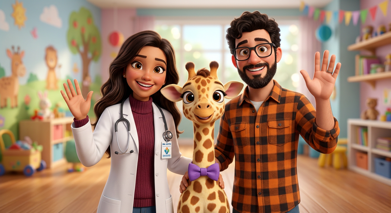

<!DOCTYPE html>
<html lang="pt-BR">
<head>
<meta charset="UTF-8"/>
<meta name="viewport" content="width=device-width, initial-scale=1.0"/>
<title>Girafês da Gabi — Aventura CNV</title>
<link href="https://fonts.googleapis.com/css2?family=Fredoka:wght@600;700&family=Nunito:wght@700;800;900&family=Plus+Jakarta+Sans:wght@500;600;700;800&display=swap" rel="stylesheet">
<script src="https://cdn.tailwindcss.com"></script>
<script>
tailwind.config={ theme:{ extend:{ fontFamily:{ game:['Nunito','Fredoka','sans-serif'], sans:['Plus Jakarta Sans','sans-serif'] } } } }
</script>
<script src="https://unpkg.com/react@18/umd/react.development.js" crossorigin></script>
<script src="https://unpkg.com/react-dom@18/umd/react-dom.development.js" crossorigin></script>
<script src="https://unpkg.com/@babel/standalone/babel.min.js"></script>
<style>
*{ -webkit-font-smoothing:antialiased }
body{ font-family:"Plus Jakarta Sans",system-ui,sans-serif; background:#FFFBF0; background-image: radial-gradient(#FFD6E8 1.2px, transparent 1.2px), radial-gradient(#FFF2A8 1.2px, transparent 1.2px); background-size: 24px 24px, 48px 48px; background-position: 0 0, 12px 12px; }
.game{ font-family:"Nunito",sans-serif; letter-spacing:-0.02em }
.press:active{ transform:translateY(2px) }
.press{ transition:transform 80ms ease, box-shadow 80ms ease, filter 120ms ease }
.shadow-3d-green{ box-shadow:0 5px 0 #46A302 }
.shadow-3d-blue{ box-shadow:0 5px 0 #0A91D4 }
.shadow-3d-yellow{ box-shadow:0 5px 0 #E5B700 }
.shadow-3d-zinc{ box-shadow:0 5px 0 #D4D4D8 }
.shadow-3d-purple{ box-shadow:0 5px 0 #7A3DCC }
.shadow-3d-pink{ box-shadow:0 5px 0 #CC2F5A }
@keyframes float{0%,100%{transform:translateY(0)}50%{transform:translateY(-6px)}}
.float{ animation:float 2.8s ease-in-out infinite }
@keyframes shake{0%,100%{transform:translateX(0)}20%{transform:translateX(-6px)}40%{transform:translateX(6px)}60%{transform:translateX(-4px)}80%{transform:translateX(4px)}}
.animate-shake{ animation:shake 420ms ease }
@keyframes pop{0%{transform:scale(0.86)}50%{transform:scale(1.06)}100%{transform:scale(1)}}
.animate-pop{ animation:pop 320ms ease }
@keyframes confetti{0%{transform:translateY(-10px) rotate(0deg); opacity:1}100%{transform:translateY(160px) rotate(720deg); opacity:0}}
@keyframes flyUp{0%{transform:translate(0,0) scale(1); opacity:1}100%{transform:translate(var(--tx), var(--ty)) scale(0.4); opacity:0}}
.fly-gem{ animation:flyUp 800ms cubic-bezier(0.2,0.8,0.4,1) forwards }
@keyframes chestGlow{0%,100%{box-shadow:0 0 0 0 rgba(255,217,0,0.5)}50%{box-shadow:0 0 0 14px rgba(255,217,0,0)}}
.chest-ready{ animation:chestGlow 1.2s ease infinite }
@keyframes wiggle{0%,100%{transform:rotate(0)}25%{transform:rotate(-2deg)}75%{transform:rotate(2deg)}}
.wiggle{ animation:wiggle 400ms ease }
.pattern-dots{ background-image:radial-gradient(#FFE8A3 2px, transparent 2.5px); background-size:22px 22px }
.scrollbar-hide::-webkit-scrollbar{display:none}
.scrollbar-hide{scrollbar-width:none}
</style>
</head>
<body class="text-zinc-800">
<div id="root"></div>
<script type="text/babel">
const {useState,useEffect,useMemo,useRef} = React;
const FASES = [
  {id:1, titulo:"O Coração da Escuta", subtitulo:"Presença & Intenção", code:"MUNDO 01", color:"#58CC02", dark:"#46A302", emoji:"💚", desc:"O primeiro poder da Gabi: sair do modo Chacal reativo e ligar o modo Girafa regulada.",
    nerdTitle:"Teoria Polivagal — Freio Vagal Ventral vs Sequestro Amigdalar",
    nerdDesc:"Treino de tônus vagal mielinizado (vago ventral). Simpático = Chacal (alerta). Parassimpático ventral = Girafa (conexão). Janela de tolerância de Siegel.",
    nerdMecanismo:"Porges (2011): vago ventral freia o coração via acetilcolina → ↑ VFC (RMSSD) → córtex pré-frontal stays online. Sem freio, amígdala 'sequestra' (Goleman) → HHA dispara cortisol/noradrenalina → escuta colapsa. 3 respirações diafragmáticas (expiração longa) restauram freio em 45-60s. HRV é biomarcador de prontidão relacional.",
    nerdClinico:"Antes de dar má notícia ou entrar em discussão pós-plantão: pés no chão + exalação 6s. Em código, quem regula primeiro co-regula a equipe. Gabi pode medir: FC cai 8-12 bpm quando no modo girafa.",
    nerdRef:"Porges SW. Polyvagal Theory 2011 • Siegel DJ. Window of Tolerance • Laborde 2017 HRV & emotion regulation • Goleman Amygdala Hijack",
    nerdBiomarcador:"📈 VFC (RMSSD ↑), FC ↓, cortisol salivar ↓, alfa-amilase ↓"},
  {id:2, titulo:"O Olhar Semiótico", subtitulo:"Observação sem Avaliação", code:"MUNDO 02", color:"#1CB0F6", dark:"#0A91D4", emoji:"🔍", desc:"Separe a câmera do comentário. Veja o fato nu, sem legenda.",
    nerdTitle:"Semiologia Pura — Sistema 1 vs Sistema 2 (Kahneman)",
    nerdDesc:"Descrever sem rotular é treino de Sistema 2 (lento, pré-frontal). Rótulo 'folgado' é Sistema 1 (rápido, amígdala).",
    nerdMecanismo:"Córtex pré-frontal dorsolateral inibe inferência rápida da amígdala/ínsula. Viés de confirmação + efeito halo fazem ver 'caráter' onde há comportamento pontual. Treinar 'câmera' (o que seria filmável?) fortalece metacognição e reduz erro diagnóstico / erro de atribuição.",
    nerdClinico:"No prontuário: troque 'paciente agressivo/difícil' por 'paciente gritou, puxou acesso às 14h12, após 6h em jejum'. Descreve sem colar legenda. Na passagem: '2 dias sem evolução LEITO 303' une; 'você é folgado' separa. Mesma lógica da semiologia: descreva sopro antes de nomear valvopatia.",
    nerdRef:"Kahneman D. Thinking Fast & Slow • Gawande A. Checklist • Croskerry P. Cognitive bias in clinical reasoning 2013",
    nerdBiomarcador:"🧠 Ativação CPF-DL ↑, julgamento moral ↓ (fMRI: Lieberman)"},
  {id:3, titulo:"Sinais Vitais do Afeto", subtitulo:"Alfabetização Emocional", code:"MUNDO 03", color:"#FF9600", dark:"#D67E00", emoji:"💛", desc:"Sentimentos são sinais vitais. Aprenda a ler sua termometria interna.",
    nerdTitle:"Interocepção & Affect Labeling — A Ínsula Decide",
    nerdDesc:"Sentimento mora na ínsula anterior (mapa do corpo). Nomear reduz amígdala ~30-50%.",
    nerdMecanismo:"Barrett (constructivismo): emoção = predição interoceptiva. Ínsula + córtex somatossensorial leem batimento, respiração, tensão. Alexitimia = déficit interoceptivo → somatização, burnout. Lieberman 2007: rotular 'estou ansiosa' (affect labeling) ↓ amígdala e ↑ CPF ventrolateral. Pseudo-sentimento ('traída', 'manipulada') não regula pois acusa o outro, não descreve corpo.",
    nerdClinico:"Gabi: confunda 'sinto que fui descartada' (leitura mental) com 'sinto tristeza + aperto no peito' (sinal vital). O primeiro pede defesa do outro; o segundo pede cuidado. Pergunte sempre: onde sinto no corpo? Qual a intensidade 0-10? Isso é semiologia afetiva.",
    nerdRef:"Barrett LF. How Emotions Are Made 2017 • Lieberman MD. Putting feelings into words 2007 • Critchley & Garfinkel Interoception 2017",
    nerdBiomarcador:"💓 Coerência interoceptiva, atividade insular anterior, VFC"},
  {id:4, titulo:"A Fisiologia das Necessidades", subtitulo:"Inventário Vital", code:"MUNDO 04", color:"#9A5CFF", dark:"#7A3DCC", emoji:"🌱", desc:"Por trás de toda emoção vive uma necessidade universal tentando respirar.",
    nerdTitle:"Homeostase Psíquica — Autodeterminação & Alostase",
    nerdDesc:"Rosenberg lista 7 eixos = nutrientes psíquicos. Negados, viram carga alostática.",
    nerdMecanismo:"McEwen: alostase = manter estabilidade através da mudança. Necessidade insatisfeita cronicamente → alostase vira carga alostática → eixo HHA ↑ cortisol, ↑ IL-6, ↓ imunidade. Teoria da Autodeterminação (Deci & Ryan): autonomia, competência e vínculo são necessidades 'vitaminas'. Confundir necessidade (universal: 'preciso descanso') com estratégia ('preciso que VOCÊ fique') gera dependência e conflito.",
    nerdClinico:"Troque 'sou obrigada pela chefia' (negação de responsabilidade → cortisol) por 'escolho cobrir porque preciso de segurança financeira e colaboração' (custo claro, lócus interno). Decisão com lócus interno ↓ burnout (Maslach). Pergunta chave: do que preciso que todo humano precisa quando sente isso?",
    nerdRef:"McEwen & Stellar Allostatic Load 1993 • Deci & Ryan Self-Determination Theory • Maslach Burnout Inventory",
    nerdBiomarcador:"🧪 Cortisol, IL-6, carga alostática, escala de bem-estar (WHO-5)"},
  {id:5, titulo:"A Posologia do Pedido", subtitulo:"Clareza de Ação", code:"MUNDO 05", color:"#FF4B82", dark:"#D93A68", emoji:"💌", desc:"Transforme exigência em pedido claro, dosável e cheio de escolha.",
    nerdTitle:"Prescrição de Ação — Posologia Relacional (SMART)",
    nerdDesc:"Pedido = prescrição com verbo observável + dose + tempo + checagem de consentimento.",
    nerdMecanismo:"Pedido vago ('seja mais atencioso') ativa incerteza → amígdala. Pedido SMART (específico, mensurável, acordável) ativa CPF e sistema de recompensa por previsibilidade. Rosenberg: pedido preserva autonomia (pode dizer não); exigência pune o não → medo, compliance falso. Linguagem observável é 'dose' (ex: '2 min sem interromper').",
    nerdClinico:"Use OFNP como receita: Quando... [obs. filmável] + sinto... [sinal vital] + porque preciso... [necessidade] + você poderia... [verbo + quando + confirma?]. Sempre feche com 'faz sentido? consegue? o que acha?'. No hospital: 'Pode higienizar agora antes do leito e me avisar?' > 'Higienizem as mãos!' (ordem → reatância).",
    nerdRef:"Rosenberg MB. Nonviolent Communication • Cialdini Influence (reatância) • SMART goals (Doran)",
    nerdBiomarcador:"📋 Taxa de adesão ao pedido, clareza percebida (Likert)"},
  {id:6, titulo:"Escuta Desarmada", subtitulo:"Empatia Radical", code:"MUNDO 06", color:"#00D1A0", dark:"#00A87F", emoji:"👂", desc:"80% da cura acontece quando você só escuta — sem consertar.",
    nerdTitle:"Co-regulação & Neurônios-Espelho — A Ausculta que Cura",
    nerdDesc:"Presença sem conselho = ocitocina. Conselho prematuro = cortisol.",
    nerdMecanismo:"Cozolino/Miller: escuta empática ativa neurônios-espelho + sistema de mentalização (junção temporo-parietal) + libera ocitocina (vínculo) e ↓ cortisol do falante em ~15-20%. Rogers: 'presença incondicional' é fator comum que prediz 30% do outcome terapêutico. Bloqueios (conselho, consolo genérico, interrogatório, história própria) roubam agência.",
    nerdClinico:"Fórmula: 'Parece [sentimento] e [sentimento], precisando de [necessidade]? É isso?' + silêncio 4s. Não complete. Cheque: 'é isso que tá vivo aí?'. No pronto-socorro, 90s de escuta reflexiva ↑ satisfação e adesão sem aumentar tempo total (Levinson 2000).",
    nerdRef:"Rogers CR. Client-Centered Therapy • Cozolino The Neuroscience of Psychotherapy • Levinson 2000 Listening",
    nerdBiomarcador:"🤝 Ocitocina ↑, cortisol ↓, aliança terapêutica (WAI)"},
  {id:7, titulo:"Modulação da Fúria", subtitulo:"Raiva e Força Protetora", code:"MUNDO 07", color:"#FF3B30", dark:"#CC2F26", emoji:"🔥", desc:"Raiva é bússola. Força que protege ≠ força que pune.",
    nerdTitle:"Circuito da Raiva — Noradrenalina, HHA & Ética da Contenção",
    nerdDesc:"Raiva = alarme de necessidade bloqueada + energia para proteger. Suprimida inflama; acolhida desinflama.",
    nerdMecanismo:"Panksepp: sistema RAGE (amígdala medial, hipotálamo, PAG) → descarga simpática: noradrenalina, ↑ PA, midríase. Se narra como 'você me fez' → mantém HHA ligado → IL-6 ↑, risco CV. Reappraisal ('preciso de respeito') recruta CPF ventromedial → ↓ amígdala. Força protetora (Restraint ética) = conter dano sem intenção de sofrimento; punitiva = infligir sofrimento para 'ensinar' → trauma, quebra de vínculo, iatrogenia.",
    nerdClinico:"Na agitação psicomotora: proteja (contenção com cuidado, explica, monitora) + valide ('parece com muita raiva e medo, precisando de segurança?') depois técnica. Pós-evento, debrief com equipe: onde estava minha necessidade de justiça/segurança? Isso evita 'contenção pedagógica'.",
    nerdRef:"Panksepp Affective Neuroscience • Lerner & Tiedens 2006 Mad vs Fear • CFM Resolução 1.644 contenção",
    nerdBiomarcador:"🔥 Noradrenalina, PA, IL-6, tempo de contenção, escala RASS"},
  {id:8, titulo:"Circuito da Gratidão", subtitulo:"Celebrar e Vincular", code:"MUNDO 08", color:"#FFD900", dark:"#E5B700", emoji:"⭐", desc:"Celebre com precisão e libere ocitocina em quem te cerca.",
    nerdTitle:"Reforço Ocitocinérgico — Dopamina do Pertencimento",
    nerdDesc:"Gratidão específica = dopamina + ocitocina + serotonina. Genérica não vicia.",
    nerdMecanismo:"Emmons & McCullough: 3 semanas de gratidão específica ↑ bem-estar 25% e ↓ burnout. Neuro: gratidão ativa estriado ventral (dopamina) + hipotálamo (ocitocina) + CPF medial (sentido). Comparação ('melhor que todos') ativa ameaça social, mesmo elogiando. Celebração OFNP: fato + sentimento + necessidade atendida + impacto concreto fecha loop de recompensa e consolida vínculo.",
    nerdClinico:"Pós-reanimação: 'Quando estabilizamos juntos 40min, sinto gratidão/orgulho porque preciso de cooperação e propósito — seu cuidado no leito 3 fez diferença' > 'valeu, foi ótimo'. Escreva 1 gratidão específica por plantão. Protege contra despersonalização (Maslach).",
    nerdRef:"Emmons & McCullough 2003 •Algoe 2012 other-praising • Maslach Burnout • Fredrickson Broaden-and-Build",
    nerdBiomarcador:"⭐ Ocitocina, dopamina, escore de gratidão (GQ-6), vínculo equipe"},
];

const AULAS = {
  1: { conceito: "CNV não é técnica de frase bonita — é ginástica vagal. Chacal = sistema simpático em alerta (julgamento protege). Girafa = ventral vagal (coração regulado, escuta ampla). Antes de falar bonito, regule o corpo: 3 respirações, pés no chão.", exemplos: [
    {antes:"Você sempre me atrasa, é irresponsável!", depois:"Quando vejo 90min sem aviso, sinto apreensão (preciso previsibilidade). Pode me avisar com 30min?", destrincha:["🔵 OBS: 90min sem aviso (fato filmável)","🟡 SENT: apreensão (corpo)","🟢 NEC: previsibilidade","🟣 PED: aviso 30min (ação+tempo)"]},
    {antes:"Você não liga pra mim!", depois:"Quando passa 2 dias sem me responder, sinto solidão (preciso conexão). Pode me dizer quando consegue responder?", destrincha:["🔵 OBS: 2 dias sem resposta","🟡 SENT: solidão","🟢 NEC: conexão","🟣 PED: dizer quando"]},
    {antes:"Calma, não é grave.", depois:"Parece assustada e precisando de segurança. Quer me contar o que mais te preocupa?", destrincha:["🔵 OBS: vejo tensão","🟡 SENT: assustada","🟢 NEC: segurança","🟣 PED: convite para falar"]}
  ]},
  2: { conceito: "Observação é câmera. Avaliação é legenda. Câmera: 'prontuário sem evolução 2 dias, leito 303'. Legenda: 'folgado'. A câmera une, a legenda separa.", exemplos: [
    {antes:"Você é desorganizado!", depois:"Vejo 2 dias sem evolução no 303", destrincha:["🔵 FATO: 2 dias, leito 303","🔴 JUÍZO: desorganizado (rótulo)"]},
    {antes:"Você me ignora!", depois:"Vejo mensagem visualizada há 24h sem resposta", destrincha:["🔵 FATO: 24h visualizada","🔴 JUÍZO: me ignora (leitura mental)"]},
    {antes:"Ele é agressivo!", depois:"Vejo gritos e mão puxando acesso", destrincha:["🔵 FATO: gritos + puxando","🔴 JUÍZO: agressivo (diagnóstico)"]}
  ]},
  3: { conceito: "Sentimento autêntico mora no corpo. Pseudo-sentimento mora na cabeça e acusa. 'Sinto-me traída' = penso que você traiu. 'Sinto mágoa e medo' = sinto no peito.", exemplos: [
    {antes:"Sinto que fui descartada", depois:"Sinto tristeza e insegurança", destrincha:["🔴 PSEUDO: fui descartada (ação do outro)","🟢 REAL: tristeza/insegurança (meu corpo)"]},
    {antes:"Sinto-me manipulada", depois:"Sinto confusão e insegurança", destrincha:["🔴 PSEUDO: manipulada (intenção do outro)","🟢 REAL: confusão"]},
    {antes:"Sinto-me atacada", depois:"Sinto medo e tensão", destrincha:["🔴 PSEUDO: atacada","🟢 REAL: medo/tensão"]}
  ]},
  4: { conceito: "Necessidade não é estratégia. 'Preciso que você me ligue' é estratégia. 'Preciso de conexão' é necessidade. Necessidades são universais: conexão, autonomia, segurança, descanso, propósito...", exemplos: [
    {antes:"Preciso que você fique", depois:"Preciso de companhia e apoio", destrincha:["🔴 ESTRATÉGIA: que você fique (pessoa específica)","🟢 NEC: companhia/apoio (universal)"]},
    {antes:"Sou obrigada pelo chefe", depois:"Escolho cobrir porque preciso de colaboração e segurança financeira", destrincha:["🔴 NEGAÇÃO: sou obrigada","🟢 ESCOLHA: preciso de colaboração"]},
    {antes:"Preciso de férias", depois:"Preciso de descanso e leveza", destrincha:["🔴 ESTRATÉGIA: férias","🟢 NEC: descanso"]}
  ]},
  5: { conceito: "Pedido tem posologia: verbo observável + dose + checagem. 'Seja mais atencioso' não é dosável. 'Me incluir na reunião segunda 10h e checar se pode?' é.", exemplos: [
    {antes:"Seja mais pontual!", depois:"Pode me avisar com 30min se atrasar e confirmar se consegue?", destrincha:["🔴 VAGO: seja pontual","🟢 DOSÁVEL: avisar 30min + confirmar"]},
    {antes:"Me respeite!", depois:"Pode me deixar concluir 2min e depois comentar?", destrincha:["🔴 VAGO: respeite","🟢 DOSÁVEL: 2min + depois"]},
    {antes:"Higienizem as mãos!", depois:"Podem higienizar agora antes do leito? Confirmam?", destrincha:["🔴 ORDEM: higienizem!","🟢 PEDIDO: agora + confirmam?"]}
  ]},
  6: { conceito: "Escuta desarmada = 80% da cura. Não é conselho, consolo, interrogatório ou história própria. É refletir sentimento + necessidade como espelho limpo. Silêncio + 'é isso?'", exemplos: [
    {antes:"Você deveria fazer X", depois:"Parece culpada e com medo, precisando de confiança?", destrincha:["🔴 CONSELHO: deveria","🟢 ESPELHO: parece + precisando"]},
    {antes:"Todo mundo passa por isso", depois:"Parece sozinha e precisando de acolhimento?", destrincha:["🔴 CONSOLO genérico","🟢 ACOLHIMENTO específico"]},
    {antes:"Por que você sente isso?", depois:"Quer me contar mais sobre o que te pesa?", destrincha:["🔴 INTERROGATÓRIO","🟢 CONVITE"]}
  ]},
  7: { conceito: "Raiva é alarme de necessidade desatendida, não licença pra punir. Força protetora: contém com cuidado para proteger. Força punitiva: pune para fazer sofrer e 'aprender'.", exemplos: [
    {antes:"Vai levar contenção pra aprender!", depois:"Vou conter seu braço com cuidado para proteger acesso, mantendo respeito. Conversamos quando se sentir seguro?", destrincha:["🔴 PUNITIVA: pra aprender (vingança)","🟢 PROTETORA: com cuidado + respeito"]},
    {antes:"Você me fez ficar furiosa!", depois:"Sinto fúria porque preciso de justiça e respeito", destrincha:["🔴 NEGAÇÃO: você me fez","🟢 RESPONSABILIDADE: preciso"]},
    {antes:"Se controle!", depois:"Parece com muita raiva e precisando de justiça?", destrincha:["🔴 JULGAMENTO","🟢 EMPATIA"]}
  ]},
  8: { conceito: "Gratidão específica é ocitocina em palavras: fato + sentimento + necessidade atendida + gesto. 'Obrigada' genérico não vicia. 'Obrigada por revisar meu artigo domingo, sinto gratidão porque preciso de parceria' vicia.", exemplos: [
    {antes:"Valeu, foi ótimo!", depois:"Quando você revisou meu artigo domingo, sinto gratidão porque preciso de aprendizado e parceria. Seu cuidado fez diferença.", destrincha:["🔴 GENÉRICO: valeu","🟢 ESPECÍFICA: fato + sentimento + necessidade + impacto"]},
    {antes:"Você é melhor que todos!", depois:"Quando vejo seu cuidado no leito 5, sinto admiração porque preciso de referência e colaboração.", destrincha:["🔴 COMPARAÇÃO","🟢 RECONHECIMENTO específico"]},
    {antes:"Até que enfim acertaram", depois:"Quando estabilizamos juntos 40min, sinto orgulho porque preciso de cooperação e propósito.", destrincha:["🔴 IRONIA","🟢 CELEBRAÇÃO"]}
  ]},
};

const SENTIMENTOS = {
  atendidas: ["grata","aliviada","encantada","confiante","inspirada","serena","energizada","aquecida","otimista","realizada"],
  naoAtendidas: ["apreensiva","frustrada","exausta","sobrecarregada","insegura","magoadada","ansiosa","irritada","triste","desanimada"]
};
const NECESSIDADES = ["conexão","compreensão","autonomia","confiança","previsibilidade","cuidado","reconhecimento","clareza","pertencimento","descanso","propósito","segurança","colaboração","respeito","apoio"];
const EXERCICIOS = [
  {id:"1-1",fase:1,type:"triagem",prompt:"Plantão: colega atrasa 90 min. Você está exausta.",contexto:"⚡ Sinal Entrópico detectado",chacal:"Você é irresponsável! Sempre me deixa na mão!",girafa:"Quando vejo que a rendição atrasou 90 min sem aviso, sinto apreensão e exaustão, porque preciso de previsibilidade e parceria. Você poderia me avisar com 30 min de antecedência?",exp:"Girafa traduz gatilho em OFNP completa: fato + sentimento + necessidade + pedido. Chacal julga caráter."},
  {id:"1-2",fase:1,type:"word_syntax",prompt:"Monte a frase Girafa na ordem certa:",blocksCorrect:["Quando percebo que sou interrompida na apresentação,","sinto frustração e insegurança,","porque preciso de respeito e espaço,","você deixaria eu concluir e depois comentar?"],exp:"Ordem OFNP: 01 Observação → 02 Sentimento → 03 Necessidade → 04 Pedido."},
  {id:"1-3",fase:1,type:"semiotica_bloqueios",prompt:"Qual o ruído aqui?",statement:"Você é uma péssima colega, só pensa em si.",options:[{label:"Julgamento Moralizador",correct:true,desc:"Rótulo de caráter"},{label:"Comparação",correct:false},{label:"Negação de Responsabilidade",correct:false},{label:"Exigência",correct:false}],exp:"Julga o outro em vez de revelar o que vive em você."},
  {id:"1-4",fase:1,type:"sinal_vs_juizo",prompt:"É sinal vital ou juízo disfarçado?",statement:"Sinto que fui descartada pela equipe",isAuthentic:false,alt:"Sinto tristeza e insegurança",exp:"'Fui descartada' é leitura mental. Sentimento puro é tristeza/insegurança."},
  {id:"1-5",fase:1,type:"escuta_clinica",prompt:"Amiga diz:",speaker:"Briguei com minha mãe, sou horrível, não sirvo pra nada.",options:[{label:"A — Conselho",text:"Você deveria pedir desculpas agora.",correct:false},{label:"B — Girafa: Empatia",text:"Parece que você tá culpada e angustiada, precisando de acolhimento e de se sentir uma boa filha?",correct:true},{label:"C — Minimizar",text:"Relaxa, toda mãe briga.",correct:false}],exp:"Escuta não conserta. Reflete sentimento + necessidade."},
  {id:"2-1",fase:2,type:"triagem",prompt:"Prontuário sem evolução por 2 dias.",chacal:"Você é desorganizado e folgado!",girafa:"Quando vejo 2 dias sem evolução no leito 303, sinto preocupação porque preciso de continuidade. Combinamos horário fixo?",exp:"Fato verificável vs rótulo 'folgado'."},
  {id:"2-2",fase:2,type:"word_syntax",prompt:"Câmera vs legenda — ordene:",blocksCorrect:["Quando vejo mensagens visualizadas sem resposta por 24h,","sinto ansiedade,","pois preciso de clareza e colaboração,","você consegue me responder até 18h hoje?"],exp:"Sem 'você me ignora'."},
  {id:"2-3",fase:2,type:"semiotica_bloqueios",prompt:"Que bloqueio é esse?",statement:"Se eu fosse boa médica, não teria errado a dose.",options:[{label:"Auto-julgamento / Comparação",correct:true},{label:"Negação",correct:false},{label:"Exigência",correct:false},{label:"Julgamento do outro",correct:false}],exp:"Comparação com 'eu ideal' gera vergonha, não aprendizado."},
  {id:"2-4",fase:2,type:"sinal_vs_juizo",prompt:"Sentimento autêntico?",statement:"Sinto-me ignorada na reunião",isAuthentic:false,alt:"Sinto frustração e solidão",exp:"'Ignorada' é ação do outro, não sentimento."},
  {id:"2-5",fase:2,type:"escuta_clinica",prompt:"Paciente diz:",speaker:"Doutora, tenho medo desse exame, não dormi.",options:[{label:"A — Interrogar",text:"Por que tá com medo? Já fez antes?",correct:false},{label:"B — Empatia",text:"Parece bem ansiosa, precisando de segurança e informação clara?",correct:true},{label:"C — Tranquilizar vazio",text:"Vai dar tudo certo.",correct:false}],exp:"Nomear medo + segurança regula mais."},
  {id:"3-1",fase:3,type:"triagem",prompt:"Parceiro atrasa pela 3ª vez.",chacal:"Você não me ama o suficiente!",girafa:"Quando percebo o 3º atraso sem aviso, sinto tristeza e irritação porque preciso de consideração. Como organizamos horários?",exp:"Troca desamor por necessidade."},
  {id:"3-2",fase:3,type:"word_syntax",prompt:"Termômetro afetivo:",blocksCorrect:["Quando ouço que meu artigo foi criticado,","sinto vulnerabilidade e desânimo,","porque valorizo reconhecimento e pertencimento,","você me diz um ponto forte que viu?"],exp:"Vulnerabilidade + pertencimento."},
  {id:"3-3",fase:3,type:"semiotica_bloqueios",prompt:"Ruído?",statement:"Você tem que me responder agora, é sua obrigação.",options:[{label:"Exigência Coercitiva",correct:true},{label:"Julgamento",correct:false},{label:"Comparação",correct:false},{label:"Negação",correct:false}],exp:"'Tem que' é coerção; pedido preserva escolha."},
  {id:"3-4",fase:3,type:"sinal_vs_juizo",prompt:"Avalie:",statement:"Sinto que você não me respeita",isAuthentic:false,alt:"Sinto mágoa e raiva",exp:"Respeito é interpretação, não sentimento."},
  {id:"3-5",fase:3,type:"escuta_clinica",prompt:"Residente:",speaker:"Errei a prescrição, sou um lixo.",options:[{label:"A — Corrigir",text:"É só conferir a dose depois.",correct:false},{label:"B — Empatia",text:"Parece culpada e com medo, precisando de confiança e apoio pra aprender?",correct:true},{label:"C — Comparar",text:"Todo mundo erra, eu já errei pior.",correct:false}],exp:"Validar culpa antes da técnica."},
  {id:"4-1",fase:4,type:"triagem",prompt:"Pede ajuda e ouve 'se vira'.",chacal:"Ninguém liga pra mim!",girafa:"Quando ouço 'se vira' após pedir ajuda, sinto solidão e frustração porque preciso de apoio. Como você poderia me ajudar hoje?",exp:"De vítima para protagonista."},
  {id:"4-2",fase:4,type:"word_syntax",prompt:"Homeostase:",blocksCorrect:["Quando passo o dia sem pausar pra almoçar,","sinto irritação e esgotamento,","porque preciso de cuidado e descanso,","você me cobre 20 min pra eu comer?"],exp:"Necessidade física sem culpa."},
  {id:"4-3",fase:4,type:"semiotica_bloqueios",prompt:"Identifique:",statement:"Sou obrigada a aceitar plantão por causa da chefia.",options:[{label:"Negação de Responsabilidade",correct:true},{label:"Julgamento",correct:false},{label:"Exigência",correct:false},{label:"Comparação",correct:false}],exp:"'Obrigada pela chefia' apaga escolha."},
  {id:"4-4",fase:4,type:"sinal_vs_juizo",prompt:"Autêntico?",statement:"Sinto-me pressionada e ansiosa antes da prova",isAuthentic:true,exp:"Sim — estados internos sem acusar."},
  {id:"4-5",fase:4,type:"escuta_clinica",prompt:"Mãe:",speaker:"Meu filho não melhora, não durmo mais.",options:[{label:"A — Conselho",text:"Tente chá pra dormir.",correct:false},{label:"B — Empatia",text:"Parece exausta e assustada, precisando de apoio e esperança?",correct:true},{label:"C — Investigar",text:"Há quantos dias tá assim?",correct:false}],exp:"Validar exaustão primeiro."},
  {id:"5-1",fase:5,type:"triagem",prompt:"Equipe não higieniza mãos.",chacal:"Vocês são porcos!",girafa:"Quando vejo que a higiene não foi feita ao entrar no leito, sinto apreensão porque preciso de segurança. Poderiam higienizar agora?",exp:"Pedido observável + momento."},
  {id:"5-2",fase:5,type:"word_syntax",prompt:"Pedido dosável:",blocksCorrect:["Quando decisões são tomadas sem me consultar,","sinto frustração,","porque preciso de participação e respeito,","me inclui na reunião de segunda 10h?"],exp:"Positivo, específico, temporal."},
  {id:"5-3",fase:5,type:"semiotica_bloqueios",prompt:"Ruído:",statement:"Você deveria ser mais grata pelo que faço.",options:[{label:"Julgamento + Exigência",correct:true},{label:"Comparação",correct:false},{label:"Negação",correct:false},{label:"Observação",correct:false}],exp:"'Deveria' impõe moral."},
  {id:"5-4",fase:5,type:"sinal_vs_juizo",prompt:"Avalie:",statement:"Sinto que você me manipula",isAuthentic:false,alt:"Sinto insegurança e confusão",exp:"Manipulação é hipótese."},
  {id:"5-5",fase:5,type:"escuta_clinica",prompt:"Parceiro:",speaker:"Você prefere o hospital a mim.",options:[{label:"A — Defender",text:"Claro que não, exagero.",correct:false},{label:"B — Empatia",text:"Parece sozinho e com saudade, precisando de conexão? Quer me contar?",correct:true},{label:"C — Prometer demais",text:"Vou pedir demissão.",correct:false}],exp:"Sem defesa, abre negociação."},
  {id:"6-1",fase:6,type:"triagem",prompt:"Amiga chora por término.",chacal:"Supera, tem gente pior!",girafa:"Te vejo chorando com dor. Imagino tristeza grande. Quer acolhimento? Tô aqui sem pressa.",exp:"Troca consolo apressado por presença."},
  {id:"6-2",fase:6,type:"word_syntax",prompt:"Escuta reflexiva:",blocksCorrect:["Quando diz que tá sobrecarregada com plantões,","imagino exaustão e culpa,","porque precisa de equilíbrio e cuidado,","é isso que tá vivo agora?"],exp:"Checa compreensão."},
  {id:"6-3",fase:6,type:"semiotica_bloqueios",prompt:"Bloqueio:",statement:"Para de chorar e seja forte.",options:[{label:"Minimização / Negação",correct:true},{label:"Comparação",correct:false},{label:"Negação de Responsabilidade",correct:false},{label:"Observação",correct:false}],exp:"Manda reprimir choro."},
  {id:"6-4",fase:6,type:"sinal_vs_juizo",prompt:"Autêntico?",statement:"Sinto esperança e alívio após conversar",isAuthentic:true,exp:"Sim — estados internos."},
  {id:"6-5",fase:6,type:"escuta_clinica",prompt:"Interno:",speaker:"Família não entende meu cansaço, vou desistir.",options:[{label:"A — Palestra",text:"Medicina é sacerdócio.",correct:false},{label:"B — Empatia",text:"Parece desvalorizado e exausto, precisando de compreensão e descanso?",correct:true},{label:"C — Interrogar",text:"Quantas horas dormiu?",correct:false}],exp:"Validar desvalorização."},
  {id:"7-1",fase:7,type:"triagem",prompt:"Paciente tenta arrancar acesso e grita.",chacal:"Seu agressivo! Vai levar contenção pra aprender!",girafa:"Vejo risco de arrancar acesso, sinto medo porque preciso de segurança. Vou conter com cuidado pra proteger, com respeito. Conversamos quando se sentir seguro?",exp:"Força protetora vs punitiva."},
  {id:"7-2",fase:7,type:"word_syntax",prompt:"Regule a fúria:",blocksCorrect:["Quando meu limite foi desrespeitado na escala,","sinto raiva intensa,","porque preciso de justiça e respeito,","revisa comigo amanhã 9h sem interrupção?"],exp:"Raiva -> pedido."},
  {id:"7-3",fase:7,type:"semiotica_bloqueios",prompt:"Qual?",statement:"Você me fez ficar furiosa, culpa sua!",options:[{label:"Negação de Responsabilidade",correct:true},{label:"Julgamento",correct:false},{label:"Comparação",correct:false},{label:"Observação",correct:false}],exp:"Sentimentos nascem de necessidades, não são 'feitos'."},
  {id:"7-4",fase:7,type:"sinal_vs_juizo",prompt:"Avalie:",statement:"Sinto-me atacada quando levanta a voz",isAuthentic:false,alt:"Sinto medo e tensão",exp:"'Atacada' é interpretação."},
  {id:"7-5",fase:7,type:"escuta_clinica",prompt:"Colega explode:",speaker:"Não aguento cobrir furo de quem não se compromete!",options:[{label:"A — Julgar",text:"Se controle, explosiva.",correct:false},{label:"B — Empatia pra raiva",text:"Parece com muita raiva e exaustão, precisando de justiça e colaboração?",correct:true},{label:"C — Conselho",text:"Fala com chefia.",correct:false}],exp:"Raiva acolhida desinflama."},
  {id:"8-1",fase:8,type:"triagem",prompt:"Equipe salvou paciente grave.",chacal:"Até que enfim fizeram algo certo.",girafa:"Quando estabilizamos juntos após 40 min de reanimação, sinto gratidão e orgulho porque preciso de cooperação e propósito. Obrigada por cada compressão!",exp:"Gratidão específica: fato + sentimento + necessidade + gesto."},
  {id:"8-2",fase:8,type:"word_syntax",prompt:"Celebração:",blocksCorrect:["Quando você revisou meu artigo com cuidado,","sinto gratidão e inspiração,","porque preciso de aprendizado e parceria,","obrigada por dedicar seu domingo — foi precioso."],exp:"Nomeia impacto concreto."},
  {id:"8-3",fase:8,type:"semiotica_bloqueios",prompt:"Sutil:",statement:"Você é melhor que todos os residentes.",options:[{label:"Comparação (mesmo elogiando)",correct:true},{label:"Observação",correct:false},{label:"Pedido",correct:false},{label:"Sentimento",correct:false}],exp:"Até elogio comparativo hierarquiza."},
  {id:"8-4",fase:8,type:"sinal_vs_juizo",prompt:"Autêntico?",statement:"Sinto-me valorizada e aquecida pelo seu apoio",isAuthentic:true,exp:"Sim — necessidade atendida."},
  {id:"8-5",fase:8,type:"escuta_clinica",prompt:"Gabi:",speaker:"Completei o protocolo, mas medo de esquecer.",options:[{label:"A — Minimizar",text:"Nunca vai esquecer, é inteligente.",correct:false},{label:"B — Celebração empática",text:"Parece orgulho com insegurança, precisando de confiança pra integrar? Repetição deliberada consolida.",correct:true},{label:"C — Cobrança",text:"Tem que praticar todo dia sem falhar.",correct:false}],exp:"Celebrar com precisão fecha circuito."},
];


// Gerador infinito - combina pools para criar casos novos
const POOLS = {
  observacoes: ["vejo escala alterada sem aviso", "vejo mensagem lida há 2 dias sem retorno", "vejo colega falando alto na passagem de plantão", "vejo prontuário sem anotação há 1 dia", "vejo familiar chorando no corredor", "vejo residente interrompendo apresentação", "vejo paciente recusando medicação", "vejo equipe sem EPI no leito"],
  sentimentos: ["frustrada","apreensiva","exausta","insegura","magoada","ansiosa","triste","irritada","sobrecarregada"],
  necessidades: ["previsibilidade","conexão","respeito","colaboração","segurança","clareza","reconhecimento","apoio","descanso"],
  pedidos: ["avisar com 30min de antecedência e confirmar?", "combinar horário fixo de registro?", "falar um de cada vez por 2min?", "me contar o que te preocupa agora?", "pausar 10min comigo para respirar?", "revisar escala amanhã 9h sem interrupção?"],
  chacais: ["Você é um irresponsável!", "Você não se importa!", "Você é folgado!", "Você sempre faz isso!", "Você não serve pra isso!"],
  bloqueios: ["Julgamento Moralizador","Comparação","Negação de Responsabilidade","Exigência Coercitiva"],
};
function gerarCasoInfinito(){
  const o = POOLS.observacoes[Math.floor(Math.random()*POOLS.observacoes.length)];
  const s = POOLS.sentimentos[Math.floor(Math.random()*POOLS.sentimentos.length)];
  const n = POOLS.necessidades[Math.floor(Math.random()*POOLS.necessidades.length)];
  const p = POOLS.pedidos[Math.floor(Math.random()*POOLS.pedidos.length)];
  const tipos = ["triagem","sinal_vs_juizo","semiotica_bloqueios","escuta_clinica"];
  const tipo = tipos[Math.floor(Math.random()*tipos.length)];
  const id = "INF-" + Date.now().toString().slice(-5);
  if(tipo==="triagem"){
    return {id, fase: 99, type:"triagem", prompt:`Caso infinito: ${o}.`, contexto:"🎲 Caso gerado na hora", chacal: POOLS.chacais[Math.floor(Math.random()*POOLS.chacais.length)], girafa:`Quando ${o}, sinto ${s} porque preciso de ${n}. Você poderia ${p}`, exp:`OFNP: ${o} → sinto ${s} → preciso ${n} → ${p}`};
  } else if(tipo==="sinal_vs_juizo"){
    const pseudo = ["Sinto que fui ignorada","Sinto que me manipulam","Sinto-me atacada","Sinto que não me respeitam"];
    const isPseudo = Math.random()>0.5;
    return {id, fase:99, type:"sinal_vs_juizo", prompt:"Sinal ou juízo?", statement: isPseudo? pseudo[Math.floor(Math.random()*pseudo.length)] : `Sinto ${s} e apreensão`, isAuthentic: !isPseudo, alt:`Sinto ${s}`, exp: isPseudo? "Pseudo-sentimento: interpretação disfarçada." : "Sentimento autêntico: no corpo."};
  } else if(tipo==="semiotica_bloqueios"){
    const frases = ["Você tem que fazer agora, é sua obrigação!","Você é péssima nisso!","Sou obrigada por causa do sistema!","Você é melhor que todos!"];
    return {id, fase:99, type:"semiotica_bloqueios", prompt:"Qual bloqueio?", statement: frases[Math.floor(Math.random()*frases.length)], options:[{label:"Julgamento Moralizador",correct:false},{label:"Exigência Coercitiva",correct:true},{label:"Negação de Responsabilidade",correct:false},{label:"Comparação",correct:false}], exp:"Identifique o ruído com precisão."};
  } else {
    return {id, fase:99, type:"escuta_clinica", prompt:"O que responder?", speaker:"Estou exausta e com medo de errar de novo.", options:[{label:"A — Conselho",text:"É só se organizar melhor.",correct:false},{label:"B — Empatia",text:`Parece ${s} e precisando de ${n}? Quer me contar mais?`,correct:true},{label:"C — Minimizar",text:"Todo mundo erra.",correct:false}], exp:"Escuta reflete sentimento + necessidade."};
  }
}

// Mascotes SVG proprietários
function GiraMascot({mood="happy", size=64}){
  const isHappy = mood==="happy";
  const isCelebrate = mood==="celebrate";
  return (
    <svg width={size} height={size} viewBox="0 0 80 80" className={isCelebrate?'float':''}>
      <ellipse cx="40" cy="73" rx="20" ry="7" fill="#000" opacity="0.06"/>
      <rect x="27" y="48" width="26" height="17" rx="9" fill="#FFF2A8" stroke="#3B2F2F" strokeWidth="2.2"/>
      <circle cx="33" cy="56" r="3" fill="#FFB347" stroke="#3B2F2F" strokeWidth="1"/><circle cx="47" cy="57" r="2.3" fill="#FFB347" stroke="#3B2F2F" strokeWidth="1"/>
      <text x="38" y="62" fontSize="7">💛</text>
      <path d="M31 62 C 25 67, 20 61, 29 57" stroke="#FF8FA3" strokeWidth="2.8" fill="none" strokeLinecap="round"/>
      <circle cx="29" cy="57" r="4" fill="#FF4B82" stroke="#3B2F2F" strokeWidth="1.5"/><circle cx="29" cy="57" r="1.5" fill="white"/>
      <rect x="34" y="32" width="12" height="16" rx="6" fill="#FFF2A8" stroke="#3B2F2F" strokeWidth="2.2"/>
      <circle cx="40" cy="39" r="2" fill="#FFB347" opacity="0.9"/>
      <rect x="16" y="8" width="48" height="32" rx="16" fill="#FFF2A8" stroke="#3B2F2F" strokeWidth="2.2"/>
      <circle cx="26" cy="20" r="4.5" fill="#FFD166" stroke="#3B2F2F" strokeWidth="1"/><circle cx="54" cy="17" r="3.2" fill="#FFD166" stroke="#3B2F2F" strokeWidth="1"/><circle cx="48" cy="27" r="2" fill="#FFD166"/>
      <ellipse cx="20" cy="13" rx="7" ry="9" fill="#FFF2A8" stroke="#3B2F2F" strokeWidth="2"/><ellipse cx="20" cy="13" rx="3.2" ry="5" fill="#FF8FA3" stroke="#3B2F2F" strokeWidth="1"/>
      <ellipse cx="60" cy="13" rx="7" ry="9" fill="#FFF2A8" stroke="#3B2F2F" strokeWidth="2"/><ellipse cx="60" cy="13" rx="3.2" ry="5" fill="#FF8FA3" stroke="#3B2F2F" strokeWidth="1"/>
      <line x1="32" y1="7" x2="30" y2="1.5" stroke="#3B2F2F" strokeWidth="2.2" strokeLinecap="round"/><circle cx="30" cy="1.5" r="3.5" fill="#FFB347" stroke="#3B2F2F" strokeWidth="1.2"/><circle cx="30" cy="1.5" r="1.5" fill="#FFF2A8"/>
      <line x1="48" y1="7" x2="50" y2="1.5" stroke="#3B2F2F" strokeWidth="2.2" strokeLinecap="round"/><circle cx="50" cy="1.5" r="3.5" fill="#FFB347" stroke="#3B2F2F" strokeWidth="1.2"/><circle cx="50" cy="1.5" r="1.5" fill="#FFF2A8"/>
      <ellipse cx="31" cy="25" rx="7" ry="7.5" fill="white" stroke="#3B2F2F" strokeWidth="1.6"/>
      <ellipse cx="49" cy="25" rx="7" ry="7.5" fill="white" stroke="#3B2F2F" strokeWidth="1.6"/>
      <circle cx="31.5" cy="26.5" r="3.8" fill="#3B2F2F"/><circle cx="49.5" cy="26.5" r="3.8" fill="#3B2F2F"/>
      <circle cx="32.8" cy="24.5" r="1.6" fill="white"/><circle cx="50.8" cy="24.5" r="1.6" fill="white"/>
      <circle cx="30.5" cy="27.8" r="0.7" fill="#FF8FA3" opacity="0.9"/><circle cx="48.5" cy="27.8" r="0.7" fill="#FF8FA3" opacity="0.9"/>
      <path d="M24 19 C 27 16, 31 15, 34 17" stroke="#3B2F2F" strokeWidth="1.4" fill="none" strokeLinecap="round"/>
      <path d="M46 17 C 49 15, 53 16, 56 19" stroke="#3B2F2F" strokeWidth="1.4" fill="none" strokeLinecap="round"/>
      <ellipse cx="40" cy="34.5" rx="11" ry="7" fill="white" stroke="#3B2F2F" strokeWidth="1.6"/>
      <ellipse cx="36.5" cy="33.5" rx="1.6" ry="2" fill="#3B2F2F"/><ellipse cx="43.5" cy="33.5" rx="1.6" ry="2" fill="#3B2F2F"/>
      <ellipse cx="40" cy="36" rx="1.2" ry="0.9" fill="#FF8FA3"/>
      {isHappy ? <path d="M35 38.5 Q 40 42, 45 38.5" stroke="#3B2F2F" strokeWidth="1.7" fill="none" strokeLinecap="round"/> : <path d="M37 38 Q 40 37, 43 38" stroke="#3B2F2F" strokeWidth="1.4" fill="none"/>}
      <ellipse cx="22" cy="31" rx="4" ry="2.5" fill="#FF8FA3" opacity="0.38"/><ellipse cx="58" cy="31" rx="4" ry="2.5" fill="#FF8FA3" opacity="0.38"/>
      {isCelebrate && <text x="62" y="9" fontSize="11">✨</text>}
      {isCelebrate && <text x="12" y="50" fontSize="8">💫</text>}
    </svg>
  );
}
function ChacMascot({mood="grumpy", size=56}){
  const isSad = mood==="sad";
  return (
    <svg width={size} height={size} viewBox="0 0 80 80">
      <ellipse cx="40" cy="72" rx="16" ry="5" fill="#000" opacity="0.05"/>
      <rect x="30" y="50" width="20" height="14" rx="7" fill="#FFCCBC" stroke="#3B2F2F" strokeWidth="2"/>
      <circle cx="36" cy="57" r="1.5" fill="#FF8A65"/><circle cx="44" cy="57" r="1.5" fill="#FF8A65"/>
      <path d="M30 56 L 18 59 L 30 62" fill="#FFCCBC" stroke="#3B2F2F" strokeWidth="1.6" strokeLinejoin="round"/>
      <circle cx="40" cy="29" r="19" fill="#FFCCBC" stroke="#3B2F2F" strokeWidth="2.2"/>
      <ellipse cx="24" cy="16" rx="8" ry="10" fill="#FFCCBC" stroke="#3B2F2F" strokeWidth="1.8"/>
      <ellipse cx="56" cy="16" rx="8" ry="10" fill="#FFCCBC" stroke="#3B2F2F" strokeWidth="1.8"/>
      <ellipse cx="24" cy="16" rx="4" ry="6" fill="#FF8A65" stroke="#3B2F2F" strokeWidth="1"/>
      <ellipse cx="56" cy="16" rx="4" ry="6" fill="#FF8A65" stroke="#3B2F2F" strokeWidth="1"/>
      <ellipse cx="40" cy="36.5" rx="11" ry="8" fill="#FFF2E0" stroke="#3B2F2F" strokeWidth="1.5"/>
      <ellipse cx="40" cy="33" rx="5.5" ry="4" fill="#3B2F2F"/>
      <circle cx="37.5" cy="32" r="1" fill="white" opacity="0.9"/><circle cx="42.5" cy="32" r="1" fill="white" opacity="0.9"/>
      <ellipse cx="40" cy="38" rx="2.5" ry="1.5" fill="#FF8FA3" stroke="#3B2F2F" strokeWidth="0.8"/>
      <ellipse cx="32" cy="25" rx="6" ry="6.5" fill="white" stroke="#3B2F2F" strokeWidth="1.5"/>
      <ellipse cx="48" cy="25" rx="6" ry="6.5" fill="white" stroke="#3B2F2F" strokeWidth="1.5"/>
      <circle cx="32.5" cy="26" r="3.2" fill="#3B2F2F"/><circle cx="48.5" cy="26" r="3.2" fill="#3B2F2F"/>
      <circle cx="33.8" cy="24.2" r="1.3" fill="white"/><circle cx="49.8" cy="24.2" r="1.3" fill="white"/>
      <path d="M27 19.5 Q 32 17.5, 37 19.5" stroke="#3B2F2F" strokeWidth="1.3" fill="none" strokeLinecap="round" opacity="0.7"/>
      <path d="M43 19.5 Q 48 17.5, 53 19.5" stroke="#3B2F2F" strokeWidth="1.3" fill="none" strokeLinecap="round" opacity="0.7"/>
      <ellipse cx="23" cy="31" rx="3.5" ry="2.2" fill="#FF8FA3" opacity="0.32"/><ellipse cx="57" cy="31" rx="3.5" ry="2.2" fill="#FF8FA3" opacity="0.32"/>
      {isSad ? <path d="M33 40 Q 40 37, 47 40" stroke="#3B2F2F" strokeWidth="1.5" fill="none" strokeLinecap="round"/> : <path d="M34 40.5 Q 40 43, 46 40.5" stroke="#3B2F2F" strokeWidth="1.5" fill="none" strokeLinecap="round"/>}
      {!isSad && <text x="58" y="42" fontSize="9">💦</text>}
      {isSad && <text x="12" y="38" fontSize="8">💧</text>}
    </svg>
  );
}

function App(){
  const [foco,setFoco]=useState(null);
  const [showOnboarding,setShowOnboarding]=useState(true);
  const [view,setView]=useState('map');
  const [faseAtiva,setFaseAtiva]=useState(1);
  const [exIdx,setExIdx]=useState(0);
  const [xp,setXp]=useState(0);
  const [gems,setGems]=useState(12);
  const [vidas,setVidas]=useState(5);
  const [streak,setStreak]=useState(0);
  const [completos,setCompletos]=useState({});
  const [unlocked,setUnlocked]=useState(1);
  const [nerd,setNerd]=useState(false);
  const [resposta,setResposta]=useState(null);
  const [showExp,setShowExp]=useState(false);
  const [shake,setShake]=useState(false);
  const [pulse,setPulse]=useState(false);
  const [dragOrder,setDragOrder]=useState([]);
  const [dragIdx,setDragIdx]=useState(null);
  const [overIdx,setOverIdx]=useState(null);
  const [nerdExpand,setNerdExpand]=useState(false);
  const [triagem,setTriagem]=useState({situacao:"", sentimento:"", necessidade:"", pedido:""});
  const [diario,setDiario]=useState([]);
  const [toast,setToast]=useState(null);
  const [showConfetti,setShowConfetti]=useState(false);
  const [flying,setFlying]=useState([]);
  const [muted,setMuted]=useState(false);
  const [daily,setDaily]=useState({date: new Date().toISOString().slice(0,10), exToday:0, triageToday:0, chestOpened:false});
  const [mapOpen,setMapOpen]=useState(false);
  const [aulaAberta,setAulaAberta]=useState(null);
  const [casoInfinito,setCasoInfinito]=useState(null);
  const [filtroAula,setFiltroAula]=useState(null);
  const audioRef = useRef(null);

  // audio helper
  function beep(freq=880, dur=120, type='sine', vol=0.12){
    if(muted) return;
    try{
      const ctx = audioRef.current || (audioRef.current = new (window.AudioContext||window.webkitAudioContext)());
      if(ctx.state==='suspended') ctx.resume();
      const o=ctx.createOscillator(); const g=ctx.createGain();
      o.type=type; o.frequency.value=freq; g.gain.value=vol;
      o.connect(g); g.connect(ctx.destination);
      o.start(); g.gain.exponentialRampToValueAtTime(0.0001, ctx.currentTime+dur/1000);
      o.stop(ctx.currentTime+dur/1000);
    }catch(e){}
  }
  function soundCorrect(){ beep(880,120,'sine',0.14); setTimeout(()=>beep(1175,160,'sine',0.13),110); setTimeout(()=>beep(1568,220,'triangle',0.09),260); }
  function soundWrong(){ beep(220,180,'square',0.08); setTimeout(()=>beep(180,220,'square',0.06),140); }
  function soundCoin(){ beep(1200,90,'sine',0.1); setTimeout(()=>beep(1600,110,'sine',0.09),80); }
  function soundChest(){ [523,659,784,1046].forEach((f,i)=> setTimeout(()=>beep(f,140,'triangle',0.11), i*90)); }

  useEffect(()=>{
    try{
      const raw=localStorage.getItem("girafes_gabi_precision_v1");
      if(raw){
        const d=JSON.parse(raw);
        if(d.foco){ setFoco(d.foco); setShowOnboarding(false);}
        if(d.xp) setXp(d.xp);
        if(d.vidas) setVidas(d.vidas);
        if(d.completos) setCompletos(d.completos);
        if(d.unlocked) setUnlocked(d.unlocked);
        if(d.faseAtiva) setFaseAtiva(d.faseAtiva);
        if(d.streak) setStreak(d.streak);
        if(d.diario) setDiario(d.diario);
        if(d.gems) setGems(d.gems);
        if(d.daily){
          const today = new Date().toISOString().slice(0,10);
          if(d.daily.date===today) setDaily(d.daily);
          else setDaily({date:today, exToday:0, triageToday:0, chestOpened:false});
        }
        if(d.muted!==undefined) setMuted(d.muted);
      }
    }catch(e){}
  },[]);
  useEffect(()=>{
    localStorage.setItem("girafes_gabi_precision_v1", JSON.stringify({foco,xp,vidas,completos,unlocked,faseAtiva,streak,diario,gems,daily,muted}));
  },[foco,xp,vidas,completos,unlocked,faseAtiva,streak,diario,gems,daily,muted]);

  const faseObj = useMemo(()=>FASES.find(f=>f.id===faseAtiva),[faseAtiva]);
  const exerciciosDaFase = useMemo(()=>EXERCICIOS.filter(e=>e.fase===faseAtiva),[faseAtiva]);
  const exercicio = exerciciosDaFase[exIdx];
  const progressoGeral = useMemo(()=> Math.round(Object.keys(completos).length/40*100),[completos]);

  useEffect(()=>{
    if(exercicio && exercicio.type==='word_syntax'){
      const arr=[...exercicio.blocksCorrect];
      for(let i=arr.length-1;i>0;i--){ const j=Math.floor(Math.random()*(i+1)); [arr[i],arr[j]]=[arr[j],arr[i]]; }
      if(JSON.stringify(arr)===JSON.stringify(exercicio.blocksCorrect)) [arr[0],arr[1]]=[arr[1],arr[0]];
      setDragOrder(arr);
    }
    setResposta(null); setShowExp(false); setShake(false); setDragIdx(null); setOverIdx(null);
  },[exercicio?.id]);

  function showToastMsg(m){ setToast(m); setTimeout(()=>setToast(null),2400); }
  function escolherFoco(f){ setFoco(f); setShowOnboarding(false); setView('map'); beep(700,100); showToastMsg(`Bora, Gabi! Foco ${f} ativado 🔥`); }
  function openFase(id){
    if(id>unlocked){ beep(180,120); showToastMsg("Mundo bloqueado! Complete o anterior 🎮"); return; }
    beep(600,80); setFaseAtiva(id); setExIdx(0); setView('exercise'); window.scrollTo({top:0,behavior:'smooth'});
  }
  function spawnFlying(){
    const id=Date.now()+Math.random();
    setFlying(f=>[...f,{id}]);
    setTimeout(()=> setFlying(f=>f.filter(x=>x.id!==id)),800);
  }
  function validar(tipo,valor){
    let ok=false;
    if(tipo==='triagem') ok=valor==='girafa';
    else if(tipo==='semiotica_bloqueios'){ const o=exercicio.options.find(x=>x.label===valor); ok=!!o?.correct; }
    else if(tipo==='sinal_vs_juizo') ok=(valor==='autentico')===exercicio.isAuthentic;
    else if(tipo==='escuta_clinica'){ const o=exercicio.options.find(x=>x.label===valor); ok=!!o?.correct; }
    else if(tipo==='word_syntax') ok=JSON.stringify(valor)===JSON.stringify(exercicio.blocksCorrect);
    setResposta(ok?'correto':'errado'); setShowExp(true);
    if(ok){
      soundCorrect(); spawnFlying();
      setPulse(true); setTimeout(()=>setPulse(false),600);
      setShowConfetti(true); setTimeout(()=>setShowConfetti(false),900);
      if(!completos[exercicio.id]){
        setCompletos(p=>({...p,[exercicio.id]:true}));
        setXp(x=>x+20); setGems(g=>g+5); setStreak(s=>s+1);
        setDaily(d=>{
          const nd={...d, exToday: d.exToday+1};
          // if daily completed and not opened, keep ready
          return nd;
        });
        const restantes = exerciciosDaFase.filter(e=> e.id!==exercicio.id && !completos[e.id]);
        if(restantes.length===0){
          if(faseAtiva<8 && faseAtiva===unlocked){ setUnlocked(u=>u+1); setTimeout(()=>soundChest(),400); showToastMsg(`MUNDO ${faseAtiva} COMPLETO! Próximo desbloqueado 🌟`); }
          else if(faseAtiva===8) showToastMsg("AVENTURA COMPLETA! Certificado liberado 🎉");
        }
      }
      if(navigator.vibrate) navigator.vibrate(20);
    } else {
      soundWrong(); setShake(true); setTimeout(()=>setShake(false),500);
      setVidas(v=> Math.max(0,v-1)); setStreak(0);
      if(navigator.vibrate) navigator.vibrate([30,30,60]);
      if(vidas<=1) setTimeout(()=>{ setVidas(5); showToastMsg("Corações recarregados! Respira 💛"); },1200);
    }
  }
  function proximo(){
    if(exIdx < exerciciosDaFase.length-1){ beep(500,60); setExIdx(i=>i+1); }
    else { if(faseAtiva<8) { beep(700,100); setView('map'); showToastMsg("Mundo concluído!"); } else setView('certificado'); }
    setResposta(null); setShowExp(false);
  }
  function pularExercicio(){
    beep(320,90); showToastMsg("Pulado! ⏭️ Sem XP, mas segue o jogo 💛");
    // não marca como completo, não perde vida, só avança
    proximo();
  }
  function handleDrag(from,to){ const a=[...dragOrder]; const [m]=a.splice(from,1); a.splice(to,0,m); setDragOrder(a); beep(500,40); }
  function onDragStart(e,i){ setDragIdx(i); try{ e.dataTransfer.effectAllowed='move'; e.dataTransfer.setData('text/plain', String(i)); }catch(err){}; setTimeout(()=>{ try{ e.target.style.opacity='0.45'; }catch(e){} },0); }
  function onDragEnd(e){ try{ e.target.style.opacity='1'; }catch(e){} setDragIdx(null); setOverIdx(null); }
  function onDragOver(e,i){ e.preventDefault(); if(dragIdx===null || dragIdx===i) return; setOverIdx(i); }
  function onDrop(e,i){ e.preventDefault(); if(dragIdx===null) return; const a=[...dragOrder]; const [m]=a.splice(dragIdx,1); a.splice(i,0,m); setDragOrder(a); beep(500,40); setDragIdx(null); setOverIdx(null); }
  function handleTouchMove(e){
    const touch = e.touches[0];
    if(dragIdx===null || !touch) return;
    const el = document.elementFromPoint(touch.clientX, touch.clientY);
    const card = el && el.closest ? el.closest('[data-idx]') : null;
    if(card){
      const idx = parseInt(card.getAttribute('data-idx'),10);
      if(!isNaN(idx) && idx!==dragIdx) setOverIdx(idx);
    }
  }
  function handleTouchEnd(){
    if(dragIdx!==null && overIdx!==null && overIdx!==dragIdx){
      const a=[...dragOrder]; const [m]=a.splice(dragIdx,1); a.splice(overIdx,0,m); setDragOrder(a); beep(500,40);
    }
    setDragIdx(null); setOverIdx(null);
  }
  function gerarGirafa(){
    if(!triagem.situacao||!triagem.sentimento||!triagem.necessidade||!triagem.pedido){ beep(200,120); showToastMsg("Preencha os 4 blocos!"); return; }
    const texto=`Quando ${triagem.situacao}, sinto ${triagem.sentimento} porque preciso de ${triagem.necessidade}. Você poderia ${triagem.pedido}?`;
    setDiario(d=>[{id:Date.now(), texto, foco, data:new Date().toISOString()},...d]);
    setDaily(d=>({...d, triageToday: d.triageToday+1}));
    soundCoin(); spawnFlying(); showToastMsg("Girafês criado! +30 XP ✨"); setXp(x=>x+30); setGems(g=>g+8);
    setTriagem({situacao:"", sentimento:"", necessidade:"", pedido:""});
  }
  function abrirBau(){
    if(daily.chestOpened) return;
    const ready = daily.exToday>=3 && daily.triageToday>=1;
    if(!ready){ showToastMsg("Complete 3 Girafês + 1 Triagem pra abrir!"); beep(180,100); return; }
    soundChest(); setDaily(d=>({...d, chestOpened:true}));
    setGems(g=>g+20); setXp(x=>x+50);
    setShowConfetti(true); setTimeout(()=>setShowConfetti(false),1200);
    showToastMsg("BAÚ DOURADO! +20 💎 +50 XP 🎉");
    if(navigator.vibrate) navigator.vibrate([20,30,20,40]);
  }
  function freezeStreak(){
    if(gems<10){ showToastMsg("Precisa de 10 💎 para congelar!"); return; }
    setGems(g=>g-10); setStreak(s=>Math.max(s,1));
    soundCoin(); showToastMsg("Streak congelado! 🔥❄️");
  }

  const pctFase = Math.round(Object.keys(completos).filter(k=>k.startsWith(faseAtiva+'-')).length/5*100);
  const dailyReady = daily.exToday>=3 && daily.triageToday>=1 && !daily.chestOpened;
  const dailyPct = Math.min(100, Math.round(((Math.min(daily.exToday,3)/3)*0.7 + (Math.min(daily.triageToday,1)/1)*0.3)*100));

  return (
    <div className="min-h-screen flex flex-col">
      {/* HEADER */}
      <header className="sticky top-0 z-30 bg-white border-b-[4px] border-zinc-900">
        <div className="max-w-[1160px] mx-auto px-3 md:px-6 h-[64px] flex items-center justify-between gap-2">
          <div className="flex items-center gap-2 md:gap-3">
            <div className="w-12 h-12 rounded-2xl bg-white border-[3px] border-zinc-900 flex items-center justify-center shadow-[0_3px_0_#111] overflow-hidden p-0"></div>
            <div className="leading-none">
              <div className="game font-black text-[15px] md:text-[17px] tracking-tight">Girafês da Gabi</div>
              <div className="hidden md:block text-[10px] font-bold tracking-widest text-zinc-400 -mt-0.5">AVENTURA CNV • DUOLINGO EDITION</div>
            </div>
            <span className="hidden lg:inline-flex ml-2 px-2.5 py-1 rounded-full bg-[#FFF1A6] border-2 border-zinc-900 text-[11px] font-black">PRESENTE DO VINICIUS • 2026</span>
          </div>
          <div className="flex items-center gap-1.5 md:gap-2">
            <div className="hidden md:flex items-center gap-1 px-2.5 py-1.5 rounded-full bg-[#FFECEE] border-2 border-zinc-900 game font-black text-[#FF4B82] text-[13px]"><span>❤️</span> {vidas}</div>
            <div className="hidden md:flex items-center gap-1 px-2.5 py-1.5 rounded-full bg-[#FFF4CC] border-2 border-zinc-900 game font-black text-[#FF9600] text-[13px]"><span>🔥</span> {streak}</div>
            <div className="relative flex items-center gap-1 px-2.5 py-1.5 rounded-full bg-[#E6FFE1] border-2 border-zinc-900 game font-black text-[#46A302] text-[13px]"><span>⚡</span> {xp} XP
              {flying.map(f=>(
                <span key={f.id} className="fly-gem absolute left-1/2 top-1/2 text-[12px] font-black pointer-events-none" style={{"--tx": (Math.random()*40-20)+"px", "--ty":"-52px"}}>+5 💎</span>
              ))}
            </div>
            <div className="flex items-center gap-1 px-2.5 py-1.5 rounded-full bg-[#E6F7FF] border-2 border-zinc-900 game font-black text-[#1CB0F6] text-[13px]"><span>💎</span> {gems}</div>
            <button onClick={()=>setMuted(m=>!m)} className="w-9 h-9 rounded-xl bg-white border-2 border-zinc-900 flex items-center justify-center press text-[14px]">{muted?'🔇':'🔊'}</button>
            <button onClick={()=>{setNerd(v=>!v); if(!nerd) setNerdExpand(true); beep(700,60);}} className={`inline-flex game font-black text-[11px] px-3 py-1.5 rounded-full border-2 press ${nerd?'bg-[#9A5CFF] text-white border-zinc-900 shadow-3d-purple animate-pop':'bg-white text-zinc-700 border-zinc-900 shadow-[0_2px_0_#111]'}`}>🧬 {nerd?'NERD ON':'🧬 NERD'}</button>
          </div>
        </div>
        <div className="h-2.5 bg-zinc-100 border-t border-zinc-900"><div className="h-full bg-[#58CC02] transition-all" style={{width:`${progressoGeral}%`}}></div></div>
      </header>

      {showOnboarding && (
        <div className="fixed inset-0 z-40 bg-[#FFFBF0] overflow-auto pattern-dots">
          <div className="max-w-[760px] mx-auto px-4 py-8 md:py-10">
            <div className="bg-white rounded-[28px] border-[3px] border-zinc-900 shadow-[0_8px_0_#111] overflow-hidden animate-pop">
              <div className="bg-[#58CC02] px-6 py-3 flex items-center justify-between border-b-[3px] border-zinc-900">
                <span className="game font-black text-white tracking-wide text-[13px]">🎁 UM PRESENTE DE VINICIUS PARA A GABI — 2026</span>
                <span className="hidden md:inline-flex bg-white px-2 py-1 rounded-full text-[11px] font-black border-2 border-zinc-900">MADE WITH 💚</span>
              </div>
              <div className="px-6 pt-6">
                
                <div className="text-center text-[10px] font-black tracking-widest text-zinc-400 mt-2">👋 GABI, VINICIUS & GIRAFÊS — BEM-VINDA À AVENTURA!</div>
              </div>
              <div className="p-6 md:p-8">
                <div className="flex flex-col md:flex-row gap-6 items-start">
                  <div className="shrink-0 float"><GiraMascot size={86} mood="celebrate"/></div>
                  <div>
                    <h1 className="game font-black text-[28px] md:text-[36px] leading-none tracking-tight">Oi, Dra. Gabi! <br/><span className="text-[#58CC02]">Bora jogar</span> comunicação?</h1>
                    <p className="mt-3 text-[14px] leading-relaxed font-medium text-zinc-600">8 mundos, 40 fases, sons, mascotes e baú diário. É game de verdade, com coração e ciência. Mantém seu streak e coleta gemas!</p>
                  </div>
                </div>
                <div className="mt-6 grid grid-cols-3 gap-2">
                  <div className="rounded-2xl bg-[#E6FFE1] border-2 border-zinc-900 p-3 text-center"><div className="game font-black text-[#46A302]">40</div><div className="text-[11px] font-bold text-zinc-600">FASES</div></div>
                  <div className="rounded-2xl bg-[#E6F7FF] border-2 border-zinc-900 p-3 text-center"><div className="game font-black text-[#1CB0F6]">8</div><div className="text-[11px] font-bold text-zinc-600">MUNDOS</div></div>
                  <div className="rounded-2xl bg-[#FFF4CC] border-2 border-zinc-900 p-3 text-center"><div className="game font-black text-[#B89A00]">🔊</div><div className="text-[11px] font-bold text-zinc-600">COM SOM</div></div>
                </div>
                <div className="mt-6 game font-black text-[13px] tracking-widest text-zinc-500">ESCOLHA SEU MODO DE JOGO</div>
                <div className="mt-3 grid grid-cols-1 md:grid-cols-2 gap-3">
                  {[
                    {id:"Clínica / Trabalho", emoji:"🏥", color:"bg-[#1CB0F6]", desc:"Plantão, equipe, pacientes"},
                    {id:"Relações Pessoais", emoji:"💕", color:"bg-[#FF4B82]", desc:"Amor, amizades, parceria"},
                    {id:"Família", emoji:"🏡", color:"bg-[#FF9600]", desc:"Origem, limites, cuidado"},
                    {id:"Autocompaixão", emoji:"🪞", color:"bg-[#9A5CFF]", desc:"Voz interna, autocuidado"},
                  ].map(c=>(
                    <button key={c.id} onClick={()=>escolherFoco(c.id)} className={`text-left p-4 rounded-2xl border-[3px] border-zinc-900 press flex gap-3 items-center ${c.color} text-white shadow-[0_5px_0_#111] hover:brightness-105`}>
                      <div className="w-12 h-12 rounded-2xl bg-white flex items-center justify-center text-[24px] border-2 border-zinc-900 shrink-0">{c.emoji}</div>
                      <div><div className="game font-black text-[15px] leading-none">{c.id}</div><div className="text-[12px] font-bold opacity-90">{c.desc}</div></div>
                    </button>
                  ))}
                </div>
                <div className="text-center text-[11px] font-bold text-zinc-400 mt-4">com som, mascotes e baú — protocolo por V. para G. 🎮</div>
              </div>
            </div>
          </div>
        </div>
      )}

      <main className="flex-1 max-w-[1160px] w-full mx-auto px-3 md:px-6 py-4 md:py-6 grid grid-cols-1 lg:grid-cols-[360px_1fr] gap-4 md:gap-6">
        <aside className="lg:sticky lg:top-[78px] self-start space-y-4 order-2 lg:order-1">
          {/* Missão Diária + Baú */}
          <div className={`rounded-[24px] border-[3px] border-zinc-900 shadow-[0_6px_0_#111] overflow-hidden ${dailyReady?'bg-[#FFF4CC] chest-ready':'bg-white'}`}>
            <div className="p-4">
              <div className="flex items-center justify-between">
                <div className="game font-black text-[13px] flex items-center gap-1.5">🎯 Missão do Dia <span className="text-[11px] bg-zinc-900 text-white px-2 py-0.5 rounded-full">{daily.date.slice(5).replace('-','/')}</span></div>
                <span className={`game font-black text-[11px] px-2 py-1 rounded-full border-2 ${dailyReady?'bg-[#58CC02] text-white border-zinc-900':'bg-zinc-100 border-zinc-200'}`}>{dailyPct}%</span>
              </div>
              <div className="mt-3 space-y-2">
                <div className="flex items-center justify-between text-[12px] font-black"><span>🦒 3 Girafês</span><span className={daily.exToday>=3?'text-[#58CC02]':''}>{Math.min(daily.exToday,3)}/3</span></div>
                <div className="h-2.5 bg-zinc-100 rounded-full border-2 border-zinc-900 overflow-hidden p-1"><div className="h-full bg-[#58CC02] rounded-full transition-all" style={{width:`${Math.min(daily.exToday,3)/3*100}%`}}></div></div>
                <div className="flex items-center justify-between text-[12px] font-black"><span>🔧 1 Triagem real</span><span className={daily.triageToday>=1?'text-[#1CB0F6]':''}>{Math.min(daily.triageToday,1)}/1</span></div>
                <div className="h-2.5 bg-zinc-100 rounded-full border-2 border-zinc-900 overflow-hidden p-1"><div className="h-full bg-[#1CB0F6] rounded-full transition-all" style={{width:`${Math.min(daily.triageToday,1)*100}%`}}></div></div>
              </div>
              <button onClick={abrirBau} disabled={daily.chestOpened} className={`mt-3 w-full py-3 rounded-full game font-black border-b-[4px] press flex items-center justify-center gap-2 ${daily.chestOpened?'bg-zinc-100 text-zinc-400 border-zinc-200': dailyReady?'bg-[#FFD900] text-zinc-900 border-[#E5B700] shadow-[0_3px_0_#111] wiggle':'bg-zinc-900 text-white border-black opacity-60'}`}>
                <span className="text-[18px]">{daily.chestOpened?'✅': dailyReady?'🎁':'🔒'}</span> {daily.chestOpened?'Baú aberto!':'Abrir Baú Dourado → +20 💎 +50 XP'}
              </button>
              {daily.chestOpened && <div className="text-center text-[11px] font-black text-zinc-500 mt-2">Volta amanhã para novo baú! 🔥 Streak: {streak} dias</div>}
            </div>
          </div>

          <div className="bg-white rounded-[24px] border-[3px] border-zinc-900 shadow-[0_6px_0_#111] overflow-hidden">
            <div className="p-4 flex items-center justify-between">
              <div className="game font-black text-[15px]">🗺️ Mapa</div>
              <div className="flex items-center gap-2">
                <span className="game font-black text-[12px] bg-zinc-900 text-white px-2.5 py-1 rounded-full">{Object.keys(completos).length}/40</span>
                <button onClick={()=>setMapOpen(v=>!v)} className="lg:hidden w-8 h-8 rounded-xl bg-white border-2 border-zinc-900 flex items-center justify-center game font-black press">{mapOpen?'−':'+'}</button>
              </div>
            </div>
            <div className="px-4 pb-2">
              <div className="h-3 bg-zinc-100 rounded-full border-2 border-zinc-900 overflow-hidden p-1"><div className="h-full bg-[#58CC02] rounded-full transition-all" style={{width:`${progressoGeral}%`}}></div></div>
              <div className="flex justify-between text-[11px] font-black text-zinc-500 mt-1"><span>PROGRESSO</span><span>{progressoGeral}%</span></div>
              <div className="flex gap-1.5 mt-2">
                <button onClick={()=>setView('map')} className={`flex-1 game font-black text-[12px] py-2 rounded-full border-2 press ${view==='map'?'bg-zinc-900 text-white border-zinc-900':'bg-white border-zinc-200'}`}>MAPA</button>
                <button onClick={()=>setView('triage')} className={`flex-1 game font-black text-[12px] py-2 rounded-full border-2 press ${view==='triage'?'bg-[#1CB0F6] text-white border-zinc-900 shadow-3d-blue':'bg-white border-zinc-200'}`}>TRIAGEM</button>
                <button onClick={()=>setView('certificado')} className={`game font-black text-[12px] px-3 py-2 rounded-full border-2 press ${view==='certificado'?'bg-[#FFD900] border-zinc-900 shadow-3d-yellow':'bg-white border-zinc-200'}`}>🏆</button>
              </div>
            </div>
            {!mapOpen && (
              <div className="lg:hidden px-4 pb-3">
                <button onClick={()=>setMapOpen(true)} className="w-full p-3 rounded-2xl bg-zinc-50 border-2 border-zinc-900 flex items-center gap-3 press">
                  <div className="w-10 h-10 rounded-full border-2 border-zinc-900 flex items-center justify-center text-[18px]" style={{background:faseObj.color}}>{faseObj.emoji}</div>
                  <div className="text-left flex-1 min-w-0">
                    <div className="game font-black text-[12px] leading-none truncate">{faseObj.titulo} • {pctFase}%</div>
                    <div className="text-[11px] font-bold text-zinc-500">Toque para ver mapa ↓</div>
                  </div>
                  <span>🗺️</span>
                </button>
              </div>
            )}
            <div className={`${mapOpen ? '' : 'hidden lg:block'} relative px-4 pb-4`}>
              <svg className="absolute left-1/2 -translate-x-1/2 top-0 bottom-0 w-[40px] h-full hidden md:block" viewBox="0 0 40 800" preserveAspectRatio="none"><path d="M20 0 C 40 80, 0 160, 20 240 C 40 320, 0 400, 20 480 C 40 560, 0 640, 20 720" stroke="#E4E4E7" strokeWidth="8" fill="none" strokeLinecap="round" strokeDasharray="14 14"/></svg>
              <div className="space-y-3 relative">
                {FASES.map(f=>{
                  const unlockedNow = f.id <= unlocked;
                  const done = f.id < unlocked || (f.id===8 && Object.keys(completos).filter(k=>k.startsWith('8-')).length===5);
                  const active = f.id===faseAtiva;
                  const doneCount = Object.keys(completos).filter(k=>k.startsWith(f.id+'-')).length;
                  const offset = f.id%2===0 ? 'md:ml-8' : 'md:mr-8';
                  return (
                    <button key={f.id} onClick={()=>openFase(f.id)} className={`w-full text-left relative flex items-center gap-3 p-3 rounded-[20px] border-[3px] press ${offset} ${active?'bg-white border-zinc-900 shadow-[0_5px_0_#111]':'bg-white border-zinc-200 shadow-3d-zinc'} ${!unlockedNow?'opacity-60 grayscale-[0.3]':''}`}>
                      <div className={`w-[56px] h-[56px] rounded-full flex items-center justify-center text-[22px] border-[3px] shrink-0 overflow-hidden ${done?'bg-[#58CC02] border-[#46A302] text-white': active? `border-zinc-900` : unlockedNow? 'bg-white border-zinc-900':'bg-zinc-100 border-zinc-300'}`} style={{background: done?'#58CC02': active? f.color:'#fff', boxShadow: done?'0 4px 0 #46A302': active? `0 4px 0 ${f.dark}`:'0 4px 0 #111'}}>
                        <span className="scale-90">{done?'✓': f.emoji}</span>
                      </div>
                      <div className="flex-1 min-w-0">
                        <div className="flex items-center gap-1.5">
                          <span className="game font-black text-[10px] tracking-widest px-1.5 py-0.5 rounded-full bg-zinc-900 text-white">{f.code}</span>
                          {done && <span className="text-[10px] font-black bg-[#E6FFE1] text-[#46A302] px-1.5 py-0.5 rounded-full border border-[#58CC02]">FEITO!</span>}
                          {active && !done && <span className="text-[10px] font-black bg-[#1CB0F6] text-white px-1.5 py-0.5 rounded-full">JOGAR</span>}
                        </div>
                        <div className="game font-black text-[13px] leading-none truncate">{f.titulo}</div>
                        <div className="text-[11px] font-bold text-zinc-500 truncate">{f.subtitulo} • {doneCount}/5 ⭐</div>
                      </div>
                    </button>
                  );
                })}
              </div>
            </div>
            <div className="px-4 py-3 bg-zinc-50 border-t-[3px] border-zinc-900 flex items-center justify-between">
              <span className="text-[11px] font-black text-zinc-500 flex items-center gap-1">🔥 {streak} dias <button onClick={freezeStreak} className="ml-2 px-2 py-1 rounded-full bg-white border-2 border-zinc-900 text-[10px]">❄️ Congelar (10💎)</button></span>
              <button onClick={()=>{localStorage.removeItem("girafes_gabi_precision_v1"); location.reload();}} className="text-[11px] font-black underline">REINICIAR</button>
            </div>
          </div>

          <div className="bg-white rounded-[20px] border-[3px] border-zinc-900 shadow-[0_5px_0_#111] p-4">
            <div className="flex items-center justify-between"><span className="game font-black text-[12px] flex items-center gap-1.5"> Diário da Gabi</span><span className="game font-black text-[11px] bg-zinc-900 text-white px-2 py-0.5 rounded-full">{diario.length}</span></div>
            <div className="mt-3 rounded-[18px] overflow-hidden border-[3px] border-zinc-900 shadow-[0_3px_0_#111]">
              
              <div className="bg-[#FFF8E1] text-center py-1.5 border-t-2 border-zinc-900 game font-black text-[10px] tracking-widest text-zinc-600">📔 SEU CANTINHO DE ESCRITA</div>
            </div>
            {diario.length===0? <div className="text-[12px] font-bold text-zinc-500 mt-2">Nenhum Girafês ainda. Crie um na Triagem!</div>:
              <div className="space-y-2 mt-2 max-h-[220px] overflow-auto scrollbar-hide">
                {diario.slice(0,3).map(d=>(
                  <div key={d.id} className="p-3 rounded-2xl bg-[#FFFBF0] border-2 border-zinc-900">
                    <div className="text-[10px] font-black text-zinc-500">{new Date(d.data).toLocaleDateString('pt-BR')} • {d.foco}</div>
                    <div className="text-[12px] font-bold leading-snug mt-1">“{d.texto}”</div>
                  </div>
                ))}
              </div>
            }
          </div>
        </aside>

        <section className="min-w-0 space-y-4 order-1 lg:order-2">
          {/* CTA sticky mobile - jogo primeiro */}
          <div className="lg:hidden sticky top-[66px] z-20 -mx-3 px-3 py-2.5 bg-[#FFFBF0]/95 backdrop-blur border-b-[3px] border-zinc-900 flex items-center gap-2">
            <div className="w-8 h-8 rounded-xl border-2 border-zinc-900 flex items-center justify-center shrink-0" style={{background:faseObj.color}}><span className="text-[16px]">{faseObj.emoji}</span></div>
            <div className="flex-1 min-w-0">
              <div className="game font-black text-[12px] leading-none truncate">{faseObj.titulo}</div>
              <div className="h-1.5 bg-zinc-100 rounded-full border border-zinc-900 overflow-hidden mt-1"><div className="h-full rounded-full transition-all" style={{width:`${pctFase}%`, background:faseObj.color}}></div></div>
            </div>
            <button onClick={()=>openFase(faseAtiva)} className="shrink-0 px-4 py-2 rounded-full game font-black text-white border-b-[3px] press text-[12px]" style={{background:faseObj.color, borderColor:faseObj.dark}}>▶ JOGAR</button>
          </div>
          {view==='map' && (
            <div className="space-y-4">
              {/* HERO GABI + VINICIUS — DESTAQUE MÁXIMO (sempre visível) */}
              <div className="bg-white rounded-[28px] border-[3px] border-zinc-900 shadow-[0_8px_0_#111] overflow-hidden">
                <div className="relative">
                  
                  <div className="absolute inset-0 bg-gradient-to-t from-black/75 via-black/10 to-transparent"></div>
                  <div className="absolute bottom-0 left-0 right-0 p-5 md:p-7 text-white">
                    <div className="inline-flex items-center gap-2 bg-[#FFD900] text-zinc-900 px-3 py-1.5 rounded-full game font-black text-[11px] border-[3px] border-zinc-900 shadow-[0_3px_0_#111]">💛 UM PRESENTE DO VINICIUS PARA A GABI • 2026</div>
                    <h2 className="game font-black text-[26px] md:text-[38px] leading-[0.9] mt-3 drop-shadow-[0_2px_0_#111]">Sua aventura<br/>começa aqui, Dra. Gabi!</h2>
                    <p className="text-[13px] md:text-[14px] font-extrabold opacity-95 mt-2 max-w-[560px] leading-snug">8 mundos • 40 fases • cada ilustração é você + Girafês 🦒 — feito à mão com amor</p>
                  </div>
                </div>
                <div className="px-4 py-3 bg-[#FFFBF0] border-t-[3px] border-zinc-900 flex flex-wrap items-center justify-between gap-2">
                  <div className="flex items-center gap-3">
                    
                    <div className="leading-none">
                      <div className="game font-black text-[13px]">Dra. Gabi</div>
                      <div className="text-[11px] font-bold text-zinc-500">+ Vinicius + Girafês 🦒</div>
                    </div>
                    <span className="hidden md:inline-flex ml-2 bg-white px-2.5 py-1 rounded-full border-2 border-zinc-900 game font-black text-[11px]">✨ ILUSTRADO</span>
                  </div>
                  <div className="flex gap-2">
                    <button onClick={()=>setShowOnboarding(true)} className="game font-black text-[11px] px-3 py-1.5 rounded-full bg-white border-2 border-zinc-900 press">👋 Ver boas-vindas</button>
                    <button onClick={()=>openFase(faseAtiva)} className="game font-black text-[12px] px-4 py-1.5 rounded-full bg-[#58CC02] text-white border-2 border-zinc-900 border-b-[4px] press hidden md:inline-flex">▶ JOGAR</button>
                  </div>
                </div>
              </div>

              {/* GALERIA DESTAQUE — 4 momentos da Gabi */}
              <div className="bg-white rounded-[28px] border-[3px] border-zinc-900 shadow-[0_8px_0_#111] overflow-hidden">
                <div className="p-4 flex items-center justify-between border-b-[3px] border-zinc-900 bg-[#FFF8E1]">
                  <div className="game font-black text-[13px] flex items-center gap-2">🎨 Galeria da Gabi — seus momentos</div>
                  <span className="game font-black text-[10px] bg-zinc-900 text-white px-2 py-1 rounded-full">6 ILUSTRAÇÕES</span>
                </div>
                <div className="grid grid-cols-2 md:grid-cols-3 gap-3 p-3 bg-zinc-50">
                  {[
                    {src:'assets/thinking.png', label:'💭 Pensando', desc:'Gabi + Gira refletindo'},
                    {src:'assets/diary.png', label:'📔 Diário', desc:'Escrevendo com Gira'},
                    {src:'assets/success.png', label:'🎉 Celebrando', desc:'High-five com Gira'},
                    {src:'assets/certificate.png', label:'🏆 Certificado', desc:'Gabi + Vinicius + medalha'},
                    {src:'assets/avatar.png', label:'👩‍⚕️ Avatar', desc:'Close da Dra. Gabi'},
                    {src:'assets/welcome.png', label:'👋 Boas-vindas', desc:'Gabi + Vinicius + Gira'},
                  ].map(card=>(
                    <div key={card.src} className="rounded-[18px] border-[3px] border-zinc-900 overflow-hidden bg-white shadow-[0_3px_0_#111] group cursor-pointer hover:brightness-105 press" onClick={()=>{ if(card.src.includes('certificate')) setView('certificado'); else if(card.src.includes('diary')) setView('triage'); else if(card.src.includes('thinking')) openFase(faseAtiva); else setShowOnboarding(true); }}>
                      
                      <div className="p-2.5 bg-white border-t-2 border-zinc-900">
                        <div className="game font-black text-[11px] leading-none">{card.label}</div>
                        <div className="text-[10px] font-bold text-zinc-500">{card.desc}</div>
                      </div>
                    </div>
                  ))}
                </div>
                <div className="px-4 py-3 bg-zinc-900 text-white text-center">
                  <div className="text-[12px] font-black">💛 Cada fase tem sua ilustração — jogue para desbloquear todas!</div>
                </div>
              </div>

              {/* AULA INTERATIVA - 60s */}
              <div className="bg-[#FFF8E1] rounded-[24px] border-[3px] border-zinc-900 shadow-[0_6px_0_#111] overflow-hidden">
                <button onClick={()=>setAulaAberta(aulaAberta?null:faseAtiva)} className="w-full p-4 flex items-center justify-between text-left">
                  <div className="flex items-center gap-3">
                    <div className="w-10 h-10 rounded-xl bg-[#FFD900] border-2 border-zinc-900 flex items-center justify-center game font-black">📚</div>
                    <div>
                      <div className="game font-black text-[13px] leading-none">Aula 60s — {faseObj.titulo}</div>
                      <div className="text-[11px] font-bold text-zinc-600">Toque para ver conceito + 3 exemplos guiados</div>
                    </div>
                  </div>
                  <span className="w-8 h-8 rounded-full bg-zinc-900 text-white flex items-center justify-center game font-black text-[12px]">{aulaAberta===faseAtiva?'−':'+'}</span>
                </button>
                {aulaAberta===faseAtiva && AULAS[faseAtiva] && (
                  <div className="px-4 pb-4 space-y-3">
                    <div className="p-3 rounded-2xl bg-white border-2 border-zinc-900 text-[13px] font-bold leading-relaxed">💡 <b>Conceito:</b> {AULAS[faseAtiva].conceito}</div>
                    {AULAS[faseAtiva].exemplos.map((ex,i)=>(
                      <div key={i} className="rounded-2xl border-[3px] border-zinc-900 overflow-hidden">
                        <div className="grid md:grid-cols-2">
                          <div className="p-3 bg-[#FFECEE] border-b-2 md:border-b-0 md:border-r-2 border-zinc-900">
                            <div className="text-[11px] font-black tracking-widest text-[#FF4B82]">🔴 ANTES — CHACAL</div>
                            <div className="text-[13px] font-bold mt-1">“{ex.antes}”</div>
                          </div>
                          <div className="p-3 bg-[#E6FFE1]">
                            <div className="text-[11px] font-black tracking-widest text-[#46A302]">🟢 DEPOIS — GIRAFA</div>
                            <div className="text-[13px] font-bold mt-1">“{ex.depois}”</div>
                          </div>
                        </div>
                        <div className="px-3 py-2 bg-zinc-900 text-white flex flex-wrap gap-1.5">
                          {ex.destrincha.map((d,j)=>(<span key={j} className="text-[10px] font-black px-2 py-1 rounded-full bg-white/15 border border-white/20">{d}</span>))}
                        </div>
                      </div>
                    ))}
                    <div className="flex gap-2">
                      <button onClick={()=>openFase(faseAtiva)} className="flex-1 py-2.5 rounded-full bg-[#58CC02] text-white game font-black border-b-[3px] border-[#46A302] press">Praticar agora →</button>
                      <button onClick={()=>{setAulaAberta(null); setView('infinito'); setCasoInfinito(gerarCasoInfinito());}} className="px-4 py-2.5 rounded-full bg-white border-2 border-zinc-900 game font-black press">🎲 Caso infinito</button>
                    </div>
                  </div>
                )}
              </div>

              <div className="bg-white rounded-[28px] border-[3px] border-zinc-900 shadow-[0_8px_0_#111] overflow-hidden">
                <div className={`h-2 w-full`} style={{background: faseObj.color}}></div>
                <div className="p-6 md:p-7">
                  <div className="flex items-start gap-4">
                    <div className={`w-16 h-16 rounded-[18px] flex items-center justify-center border-[3px] border-zinc-900 shrink-0 overflow-hidden`} style={{background: faseObj.color, boxShadow:`0 4px 0 ${faseObj.dark}`}}><span className="text-[30px]">{faseObj.emoji}</span></div>
                    <div className="flex-1">
                      <div className="game font-black text-[12px] tracking-widest text-zinc-500">{faseObj.code}</div>
                      <h2 className="game font-black text-[24px] md:text-[28px] leading-none tracking-tight">{faseObj.titulo}</h2>
                      <div className="text-[13px] font-bold text-zinc-500">{faseObj.subtitulo}</div>
                    </div>
                    <div className="hidden md:flex flex-col items-center gap-1">
                      <div className="w-14 h-14 rounded-full border-[3px] border-zinc-900 flex items-center justify-center game font-black text-[14px]" style={{background:`conic-gradient(${faseObj.color} ${pctFase}%, #f4f4f5 0)`}}><span className="bg-white w-10 h-10 rounded-full flex items-center justify-center border-2 border-zinc-900">{pctFase}%</span></div>
                    </div>
                  </div>
                  <p className="text-[14px] font-medium text-zinc-600 leading-relaxed mt-4">{faseObj.desc}</p>
                  {nerd && (
                    <div className="mt-4 rounded-[20px] border-[3px] border-zinc-900 overflow-hidden shadow-[0_4px_0_#111]">
                      <div className="bg-[#9A5CFF] p-3 flex items-center justify-between">
                        <div className="flex items-center gap-2">
                          <span className="w-8 h-8 rounded-xl bg-white border-2 border-zinc-900 flex items-center justify-center text-[14px]">🧬</span>
                          <div>
                            <div className="game font-black text-[11px] tracking-widest text-white/90">MODO NERD • PARA A DRA. GABI</div>
                            <div className="game font-black text-[13px] text-white leading-none">{faseObj.nerdTitle}</div>
                          </div>
                        </div>
                        <button onClick={()=>setNerdExpand(v=>!v)} className="w-8 h-8 rounded-full bg-white border-2 border-zinc-900 flex items-center justify-center game font-black text-[12px] press">{nerdExpand?'−':'+'}</button>
                      </div>
                      <div className="p-3.5 bg-[#F4F0FF]">
                        <div className="text-[13px] font-bold leading-relaxed text-zinc-700">{faseObj.nerdDesc}</div>
                        {nerdExpand && (
                          <div className="mt-3 space-y-2.5 animate-pop">
                            <div className="p-3 rounded-2xl bg-white border-2 border-zinc-900">
                              <div className="game font-black text-[11px] tracking-widest text-[#9A5CFF] flex items-center gap-1">🧠 MECANISMO NEURAL</div>
                              <div className="text-[12.5px] font-medium leading-relaxed text-zinc-700 mt-1">{faseObj.nerdMecanismo}</div>
                            </div>
                            <div className="p-3 rounded-2xl bg-[#E6FFE1] border-2 border-zinc-900">
                              <div className="game font-black text-[11px] tracking-widest text-[#46A302] flex items-center gap-1">🏥 NA PRÁTICA DA GABI</div>
                              <div className="text-[12.5px] font-bold leading-relaxed text-zinc-700 mt-1">{faseObj.nerdClinico}</div>
                            </div>
                            <div className="grid md:grid-cols-2 gap-2.5">
                              <div className="p-3 rounded-2xl bg-[#FFF4CC] border-2 border-zinc-900">
                                <div className="game font-black text-[11px] tracking-widest text-[#B89A00]">📈 BIOMARCADOR</div>
                                <div className="text-[12px] font-bold mt-1">{faseObj.nerdBiomarcador}</div>
                              </div>
                              <div className="p-3 rounded-2xl bg-white border-2 border-zinc-900">
                                <div className="game font-black text-[11px] tracking-widest text-zinc-500">📚 LEITURA RÁPIDA</div>
                                <div className="text-[11px] font-bold leading-snug text-zinc-600 mt-1">{faseObj.nerdRef}</div>
                              </div>
                            </div>
                            <div className="p-2.5 rounded-full bg-zinc-900 text-white flex items-center justify-between">
                              <span className="text-[11px] font-black px-2">💡 DICA DE PROVA: cai em prova de residência?</span>
                              <span className="text-[11px] font-bold bg-white text-zinc-900 px-2.5 py-1 rounded-full">Sim — regulação = segurança do paciente</span>
                            </div>
                          </div>
                        )}
                        {!nerdExpand && <button onClick={()=>setNerdExpand(true)} className="mt-2 w-full py-2 rounded-full bg-white border-2 border-zinc-900 game font-black text-[11px] press">+ Ver mecanismo, biomarcador e refs</button>}
                      </div>
                    </div>
                  )}
                  <div className="mt-5 flex flex-wrap gap-2">
                    <button onClick={()=>openFase(faseAtiva)} className="px-7 py-3.5 rounded-full game font-black text-[16px] text-white border-b-[5px] press" style={{background:faseObj.color, borderColor:faseObj.dark, boxShadow:`0 3px 0 ${faseObj.dark}`}}>▶ JOGAR AGORA</button>
                    <button onClick={()=>{beep(600,60); showToastMsg(muted?"Som ativado 🔊":"Som mutado 🔇"); setMuted(!muted);}} className="px-4 py-3.5 rounded-full bg-white border-[3px] border-zinc-900 game font-black press">{muted?'🔇 Som off':'🔊 Som on'}</button>
                  </div>
                </div>
                <div className="grid grid-cols-2 md:grid-cols-4 gap-2 p-3 bg-zinc-50 border-t-[3px] border-zinc-900">
                  {[
                    {k:"01 OBSERVAÇÃO", c:"#1CB0F6"},
                    {k:"02 SENTIMENTO", c:"#FF9600"},
                    {k:"03 NECESSIDADE", c:"#9A5CFF"},
                    {k:"04 PEDIDO", c:"#58CC02"},
                  ].map(m=>(
                    <div key={m.k} className="text-center p-2 rounded-2xl bg-white border-2 border-zinc-900">
                      <div className="w-2 h-2 rounded-full mx-auto" style={{background:m.c}}></div>
                      <div className="game font-black text-[10px] mt-1">{m.k}</div>
                    </div>
                  ))}
                </div>
              </div>
              <div className="bg-white rounded-[24px] border-[3px] border-zinc-900 shadow-[0_6px_0_#111] p-4">
                <div className="game font-black text-[13px]">⭐ Fases deste mundo</div>
                <div className="mt-3 grid grid-cols-5 gap-2">
                  {exerciciosDaFase.map((ex,i)=>{
                    const done = !!completos[ex.id];
                    const active = i===exIdx;
                    return (
                      <button key={ex.id} onClick={()=>{ beep(500,50); setExIdx(i); setView('exercise'); }} className={`aspect-square rounded-2xl border-[3px] flex flex-col items-center justify-center gap-1 press ${done?'bg-[#58CC02] border-[#46A302] text-white shadow-3d-green': active?'bg-[#FFD900] border-[#E5B700] shadow-3d-yellow':'bg-white border-zinc-200 shadow-3d-zinc'}`}>
                        <span className="game font-black text-[16px]">{done?'✓':i+1}</span>
                        <span className="text-[9px] font-black leading-none text-center px-1">{ex.type==='triagem'?'VS':ex.type==='word_syntax'?'ORDEM':ex.type==='semiotica_bloqueios'?'BLOCO':ex.type==='sinal_vs_juizo'?'SINAL':'ESCUTA'}</span>
                      </button>
                    );
                  })}
                </div>
              </div>
              <div className="grid md:grid-cols-2 gap-3">
                <div className="bg-[#1CB0F6] rounded-[24px] border-[3px] border-zinc-900 shadow-[0_6px_0_#111] p-5 text-white">
                  <div className="game font-black flex items-center gap-2"><GiraMascot size={28} mood="happy"/> Como jogar?</div>
                  <div className="text-[13px] font-bold mt-2 leading-relaxed">1️⃣ Escolha Girafa vs Chacal<br/>2️⃣ Ordene blocos OFNP<br/>3️⃣ Desmascare bloqueios (arraste!)<br/>4️⃣ Cerque com empatia</div>
                </div>
                <div className="bg-zinc-900 rounded-[24px] border-[3px] border-zinc-900 shadow-[0_6px_0_#111] p-5 text-white">
                  <div className="game font-black text-[#FFD900]">💌 Para a Gabi</div>
                  <div className="text-[13px] font-medium leading-relaxed mt-2 text-zinc-100">“Cada fase é um treino de coração. 1% mais girafa a cada jogada.”</div>
                </div>
              </div>
              {nerd && (
                <div className="bg-[#F4F0FF] rounded-[24px] border-[3px] border-zinc-900 shadow-[0_6px_0_#111] overflow-hidden">
                  <div className="bg-[#9A5CFF] p-4 flex items-center gap-3 border-b-[3px] border-zinc-900">
                    <div className="w-10 h-10 rounded-xl bg-white border-2 border-zinc-900 flex items-center justify-center text-[18px]">📚</div>
                    <div className="text-white"><div className="game font-black text-[11px] tracking-widest opacity-90">BIBLIOTECA NERD DA DRA. GABI</div><div className="game font-black text-[16px] leading-none">Fisiologia da Conexão — cheat-sheet</div></div>
                    <span className="ml-auto hidden md:inline bg-white text-[#9A5CFF] game font-black text-[10px] px-2.5 py-1 rounded-full border-2 border-zinc-900">8 MUNDOS • MECANISMOS</span>
                  </div>
                  <div className="p-4 grid md:grid-cols-2 gap-3">
                    {FASES.map(f=>(
                      <div key={f.id} className="p-3 rounded-2xl bg-white border-2 border-zinc-900">
                        <div className="flex items-center gap-2">
                          <span className="w-7 h-7 rounded-full border-2 border-zinc-900 flex items-center justify-center text-[12px] shrink-0" style={{background:f.color}}>{f.emoji}</span>
                          <span className="game font-black text-[11px] leading-none">{f.code} • {f.titulo}</span>
                        </div>
                        <div className="text-[11px] font-bold text-[#9A5CFF] mt-1">{f.nerdTitle}</div>
                        <div className="text-[11px] font-medium leading-snug text-zinc-600 mt-1" style={{display:'-webkit-box', WebkitLineClamp:3, WebkitBoxOrient:'vertical', overflow:'hidden'}}>{f.nerdMecanismo.slice(0,130)}…</div>
                        <div className="text-[10px] font-black mt-1.5 bg-[#FFF4CC] inline-block px-2 py-0.5 rounded-full border border-zinc-900">{f.nerdBiomarcador}</div>
                      </div>
                    ))}
                  </div>
                  <div className="px-4 pb-4">
                    <div className="p-3 rounded-2xl bg-zinc-900 text-white">
                      <div className="game font-black text-[11px] tracking-widest text-[#FFD900]">🧪 COMO USAR NA ROTINA DE PLANTÃO</div>
                      <div className="text-[12px] font-bold leading-relaxed mt-1.5">• <b>30s pré-conversa difícil:</b> respiração 4-6 (ativa vago). • <b>Prontuário:</b> descreva sem rótulo. • <b>Check-in corporal:</b> onde sinto? (ínsula). • <b>Decisão:</b> lócus interno (“escolho porque preciso...”). • <b>Pedido:</b> feche com checagem. • <b>Debrief:</b> celebre 1 fato específico por turno → ocitocina + evita burnout.</div>
                      <div className="text-[10px] font-bold text-zinc-400 mt-2">Refs rápidas: Porges 2011 • Lieberman 2007 • Barrett 2017 • McEwen 1993 • Deci & Ryan • Emmons 2003 • Levinson 2000 — guarde este card, Gabi!</div>
                    </div>
                  </div>
                </div>
              )}
            </div>
          )}

          {view==='exercise' && exercicio && (
            <div className={`bg-white rounded-[28px] border-[3px] border-zinc-900 shadow-[0_8px_0_#111] overflow-hidden ${shake?'animate-shake':''} ${pulse?'pulse-glow':''} relative`}>
              {showConfetti && (
                <div className="pointer-events-none absolute inset-0 overflow-hidden z-10">
                  {[...Array(14)].map((_,i)=>(
                    <span key={i} className="absolute text-[18px]" style={{left: `${8+i*7}%`, top:'-10px', animation:`confetti ${600+Math.random()*400}ms ease forwards`, animationDelay:`${i*40}ms`}}>{['🎉','✨','⭐','💚','💎'][i%5]}</span>
                  ))}
                </div>
              )}
              <div className="px-5 md:px-7 pt-5 pb-4 border-b-[3px] border-zinc-900 bg-zinc-50 flex items-center gap-3">
                <button onClick={()=>setView('map')} className="w-9 h-9 rounded-xl bg-white border-2 border-zinc-900 flex items-center justify-center press">←</button>
                <div className="flex-1"><div className="h-3 bg-white rounded-full border-2 border-zinc-900 overflow-hidden p-1"><div className="h-full rounded-full transition-all" style={{width:`${((exIdx+1)/5)*100}%`, background: faseObj.color}}></div></div></div>
                <button onClick={pularExercicio} className="game font-black text-[11px] px-3 py-1.5 rounded-full bg-white border-2 border-zinc-900 press hover:bg-zinc-50 flex items-center gap-1">⏭️ Pular</button>
                <span className="game font-black text-[12px] bg-white border-2 border-zinc-900 px-2.5 py-1 rounded-full">❤️ {vidas}</span>
              </div>

              <div className="p-5 md:p-7">
                {/* Gira falando */}
                <div className="flex gap-3 items-start mb-4">
                  <div className="shrink-0 hidden md:block"><GiraMascot size={64} mood={resposta==='correto'?'celebrate': resposta==='errado'?'happy':'happy'}/></div>
                  <div className="flex-1">
                    <div className="inline-flex items-center gap-2">
                      <span className="game font-black text-[11px] tracking-widest px-2.5 py-1 rounded-full border-2 border-zinc-900 text-white" style={{background:faseObj.color}}>{exercicio.id}</span>
                      <span className="game font-black text-[11px] tracking-widest text-zinc-500">{{triagem:"DUELO 🦒⚡🐺", word_syntax:"MONTE A FRASE 🧩", semiotica_bloqueios:"DESMASCARE 🕵️", sinal_vs_juizo:"SINAL OU JUÍZO? 💛", escuta_clinica:"ESCUTA 👂"}[exercicio.type]}</span>
                    </div>
                    <div className="mt-2 bg-white border-[3px] border-zinc-900 rounded-[18px] p-3 md:p-4 relative shadow-[0_3px_0_#111]">
                      <div className="absolute -left-2 top-4 w-3 h-3 bg-white border-l-[3px] border-b-[3px] border-zinc-900 rotate-45 hidden md:block"></div>
                      <h3 className="game font-black text-[16px] md:text-[18px] leading-tight">{exercicio.prompt}</h3>
                      {exercicio.statement && <div className="text-[12px] font-bold text-zinc-600 mt-1">“{exercicio.statement}”</div>}
                      {exercicio.speaker && <div className="text-[13px] font-bold bg-[#E6F7FF] rounded-xl p-2 mt-2 border-2 border-zinc-900">“{exercicio.speaker}”</div>}
                      {!resposta && exercicio.type!=='triagem' && (
                        <div className="mt-3 flex items-center gap-3 p-2 rounded-2xl bg-[#FFFBF0] border-2 border-zinc-900">
                          
                          <div className="text-[11px] font-bold leading-snug text-zinc-600">Dica da Gabi: <span className="text-[#9A5CFF]">pense onde sente no corpo</span> antes de responder. A girafinha tá te ajudando! 🦒</div>
                        </div>
                      )}
                    </div>
                  </div>
                </div>

                {exercicio.type==='triagem' && (
                  <div className="space-y-3">
                    <div className="text-[11px] font-black tracking-widest text-zinc-500 text-center flex items-center justify-center gap-2"><ChacMascot size={32} mood="grumpy"/> {exercicio.contexto} <GiraMascot size={32} mood="happy"/></div>
                    <div className="grid md:grid-cols-2 gap-3">
                      <button disabled={!!resposta} onClick={()=>validar('triagem','chacal')} className={`text-left p-4 rounded-[20px] border-[3px] press flex gap-3 ${resposta?'border-zinc-200 opacity-60':'border-zinc-900 bg-[#FFECEE] shadow-[0_4px_0_#111] hover:brightness-105'}`}>
                        <div className="shrink-0 hidden md:block"><ChacMascot size={48} mood="grumpy"/></div>
                        <div><div className="inline-flex px-2.5 py-1 rounded-full bg-[#FF4B82] text-white game font-black text-[11px] border-2 border-zinc-900">🐺 CHACAL</div><div className="text-[14px] font-bold leading-snug mt-2">“{exercicio.chacal}”</div></div>
                      </button>
                      <button disabled={!!resposta} onClick={()=>validar('triagem','girafa')} className={`text-left p-4 rounded-[20px] border-[3px] press flex gap-3 ${resposta? (resposta==='correto'?'border-[#58CC02] bg-[#E6FFE1]':'border-zinc-200 opacity-60'):'bg-[#E6FFE1] border-zinc-900 shadow-[0_4px_0_#111] hover:brightness-105'}`}>
                        <div className="shrink-0 hidden md:block"><GiraMascot size={48} mood="happy"/></div>
                        <div><div className="inline-flex px-2.5 py-1 rounded-full bg-[#58CC02] text-white game font-black text-[11px] border-2 border-zinc-900">🦒 GIRAFA</div><div className="text-[14px] font-bold leading-snug mt-2">“{exercicio.girafa}”</div></div>
                      </button>
                    </div>
                  </div>
                )}

                {exercicio.type==='word_syntax' && (
                  <div className="space-y-3">
                    <div className="flex items-center justify-between">
                      <div className="text-[11px] font-black tracking-widest text-zinc-500 flex items-center gap-1.5"><span className="w-6 h-6 rounded-lg bg-[#FFD900] border-2 border-zinc-900 flex items-center justify-center game font-black">↕</span> ARRASTE PARA ORDENAR</div>
                      <span className="text-[11px] font-bold text-zinc-400 hidden md:inline">clique e arraste • toque e arraste • ou use ↑↓</span>
                      <span className="text-[11px] font-bold text-zinc-400 md:hidden">arraste ↕</span>
                    </div>
                    <div className="space-y-2.5 touch-manipulation" onTouchMove={handleTouchMove} onTouchEnd={handleTouchEnd}>
                      {dragOrder.map((b,i)=>(
                        <div key={b} data-idx={i} draggable={!resposta} onDragStart={(e)=>onDragStart(e,i)} onDragEnd={onDragEnd} onDragOver={(e)=>onDragOver(e,i)} onDrop={(e)=>onDrop(e,i)} onTouchStart={()=>{if(!resposta) setDragIdx(i);}} className={`group flex items-center gap-2.5 p-3 rounded-[18px] border-[3px] select-none ${dragIdx===i?'opacity-40 scale-[0.98] border-dashed bg-[#FFF4CC]': overIdx===i?'bg-[#E6FFE1] border-[#58CC02] scale-[1.01] shadow-[0_6px_0_#46A302]':'bg-white border-zinc-900 shadow-[0_3px_0_#111]'} ${resposta?'opacity-60':''} ${dragIdx===null?'press hover:brightness-[0.98]':''}`} style={{touchAction:'none'}}>
                          <div className={`w-9 h-9 rounded-xl border-2 border-zinc-900 flex items-center justify-center game font-black text-[13px] shrink-0 ${i===0?'bg-[#1CB0F6] text-white':i===1?'bg-[#FF9600] text-white':i===2?'bg-[#9A5CFF] text-white':'bg-[#58CC02] text-white'}`}>{i+1}</div>
                          <span className="text-[13.5px] font-extrabold flex-1 leading-snug tracking-tight">{b}</span>
                          <div className="flex items-center gap-1.5 shrink-0">
                            <div className={`hidden md:flex w-9 h-9 rounded-xl bg-zinc-900 text-white items-center justify-center cursor-grab active:cursor-grabbing border-2 border-zinc-900 ${dragIdx===i?'bg-[#58CC02]':''}`} title="arraste">≡</div>
                            <div className="flex flex-col gap-1">
                              <button disabled={!!resposta || i===0} onClick={()=>handleDrag(i,i-1)} className="w-8 h-8 rounded-xl bg-white border-2 border-zinc-900 flex items-center justify-center game font-black text-[12px] disabled:opacity-20 press hover:bg-zinc-50" aria-label="mover para cima">↑</button>
                              <button disabled={!!resposta || i===dragOrder.length-1} onClick={()=>handleDrag(i,i+1)} className="w-8 h-8 rounded-xl bg-white border-2 border-zinc-900 flex items-center justify-center game font-black text-[12px] disabled:opacity-20 press hover:bg-zinc-50" aria-label="mover para baixo">↓</button>
                            </div>
                          </div>
                        </div>
                      ))}
                    </div>
                    <div className="flex items-center gap-2">
                      <button disabled={!!resposta} onClick={()=>{const a=[...exercicio.blocksCorrect]; for(let i=a.length-1;i>0;i--){const j=Math.floor(Math.random()*(i+1)); [a[i],a[j]]=[a[j],a[i]];} if(JSON.stringify(a)===JSON.stringify(exercicio.blocksCorrect))[a[0],a[1]]=[a[1],a[0]]; setDragOrder(a); beep(300,50);}} className="px-4 py-2.5 rounded-full bg-white border-2 border-zinc-900 game font-black text-[11px] press flex items-center gap-1">🔀 Embaralhar</button>
                      <button disabled={!!resposta} onClick={()=>validar('word_syntax',dragOrder)} className="flex-1 py-3.5 rounded-full game font-black text-[15px] text-white border-b-[5px] press bg-[#58CC02] border-[#46A302] shadow-[0_3px_0_#111] hover:brightness-105">✨ VALIDAR FRASE</button>
                    </div>
                    <div className="text-center text-[10px] font-black tracking-widest text-zinc-400">ORDEM CORRETA: 🔵 OBS → 🟡 SENT → 🟢 NEC → 🟣 PEDIDO</div>
                  </div>
                )}

                {exercicio.type==='semiotica_bloqueios' && (
                  <div className="grid gap-2 mt-3">
                    {exercicio.options.map(o=>(
                      <button key={o.label} disabled={!!resposta} onClick={()=>validar('semiotica_bloqueios',o.label)} className={`text-left p-3.5 rounded-2xl border-[3px] flex items-center justify-between press ${resposta?'bg-white border-zinc-200':'bg-white border-zinc-900 shadow-[0_3px_0_#111] hover:bg-zinc-50'}`}>
                        <div><div className="game font-black text-[14px]">{o.label}</div>{o.desc && <div className="text-[11px] font-bold text-zinc-500">{o.desc}</div>}</div>
                        <span className="w-8 h-8 rounded-full bg-[#FFD900] border-2 border-zinc-900 flex items-center justify-center game font-black">→</span>
                      </button>
                    ))}
                  </div>
                )}

                {exercicio.type==='sinal_vs_juizo' && (
                  <div className="grid md:grid-cols-2 gap-3 mt-3">
                    <button disabled={!!resposta} onClick={()=>validar('sinal_vs_juizo','autentico')} className="p-4 rounded-[20px] bg-[#E6FFE1] border-[3px] border-zinc-900 text-left press shadow-[0_3px_0_#111]"><div className="game font-black text-[12px] text-[#46A302]">💚 SINAL VITAL</div><div className="text-[12px] font-bold text-zinc-700 mt-1">Emoção do corpo, sem culpar.</div></button>
                    <button disabled={!!resposta} onClick={()=>validar('sinal_vs_juizo','pseudo')} className="p-4 rounded-[20px] bg-[#FFECEE] border-[3px] border-zinc-900 text-left press shadow-[0_3px_0_#111]"><div className="game font-black text-[12px] text-[#FF4B82]">💔 PSEUDO</div><div className="text-[12px] font-bold text-zinc-700 mt-1">Juízo disfarçado.</div></button>
                  </div>
                )}

                {exercicio.type==='escuta_clinica' && (
                  <div className="space-y-2 mt-3">
                    {exercicio.options.map(o=>(
                      <button key={o.label} disabled={!!resposta} onClick={()=>validar('escuta_clinica',o.label)} className={`w-full text-left p-4 rounded-[20px] border-[3px] press ${resposta?'bg-white border-zinc-200 opacity-70':'bg-white border-zinc-900 shadow-[0_3px_0_#111] hover:bg-zinc-50'}`}>
                        <div className="text-[11px] font-black text-zinc-500">{o.label}</div><div className="text-[13px] font-bold mt-1">“{o.text}”</div>
                      </button>
                    ))}
                  </div>
                )}

                {!showExp && !resposta && (
                  <div className="mt-4 flex items-center justify-center">
                    <button onClick={pularExercicio} className="text-[12px] font-black text-zinc-500 underline hover:text-zinc-700 press">⏭️ Pular este exercício (ver resposta sem ganhar XP)</button>
                  </div>
                )}
                {showExp && (
                  <div className={`mt-5 p-4 rounded-[20px] border-[3px] ${resposta==='correto'?'bg-[#E6FFE1] border-[#58CC02]':'bg-[#FFE8CC] border-[#FF9600]'}`}>
                    <div className="flex items-center gap-2">
                      <div className="shrink-0">{resposta==='correto'? <GiraMascot size={36} mood="celebrate"/> : <ChacMascot size={32} mood="sad"/>}</div>
                      <div className="flex-1">
                        {resposta==='correto' && (
                          <div className="mb-2 rounded-2xl overflow-hidden border-[3px] border-zinc-900">
                            
                          </div>
                        )}
                        <div className="game font-black text-[14px]">{resposta==='correto'?'BOA, GABI! +20 XP +5 💎':'QUASE LÁ!'}</div>
                        <div className="text-[13px] font-bold leading-relaxed">{exercicio.exp}</div>
                        <div className="mt-3 p-3 rounded-2xl bg-white border-[3px] border-zinc-900">
                          <div className="text-[11px] font-black tracking-widest text-zinc-500 flex items-center gap-1.5"><span className="w-5 h-5 rounded-full bg-[#FFD900] border-2 border-zinc-900 flex items-center justify-center text-[10px]">🔍</span> POR QUE FUNCIONA? <span className="ml-auto text-[10px] bg-zinc-900 text-white px-2 py-0.5 rounded-full">OFNP</span></div>
                          <div className="text-[12.5px] font-bold leading-relaxed mt-2">
                            {exercicio.type==='triagem' && "Chacal julga caráter ('você é irresponsável') → ativa defesa e eixo simpático do outro. Girafa separa fato filmável + sinal corporal + necessidade universal + pedido concreto → o outro consegue ouvir sem se defender, porque não foi atacado."}
                            {exercicio.type==='word_syntax' && "OFNP na ordem certa evita que o outro ouça crítica. Observar (câmera) → Sentir (corpo) → Precisar (vitamina) → Pedir (posologia) mantém o córtex pré-frontal ligado e o sistema de ameaça desligado."}
                            {exercicio.type==='semiotica_bloqueios' && "Esses 4 bloqueios são 'ruídos semióticos' que impedem conexão. Nomear o ruído ('isso é julgamento moralizador') já desarma 50% dele — vira metacognição."}
                            {exercicio.type==='sinal_vs_juizo' && "Nomear sentimento real (no corpo: 'tristeza, aperto') regula amígdala (affect labeling ↓ 30%). Pseudo-sentimento ('traída, manipulada') soa como acusação e escala conflito."}
                            {exercicio.type==='escuta_clinica' && "Conselho rouba autonomia e libera cortisol. Empatia devolve agência, libera ocitocina. Refletir sentimento+necessidade faz a pessoa se sentir vista — 80% da resolução é só isso + silêncio."}
                          </div>
                          <div className="text-[11px] font-black tracking-widest text-zinc-500 mt-3 flex items-center gap-1">💡 EXEMPLO PRÁTICO EXTRA <span className="text-[10px] font-bold bg-[#E6FFE1] px-2 py-0.5 rounded-full border border-zinc-900">fale em voz alta 3x</span></div>
                          <div className="text-[12px] font-bold leading-relaxed mt-1 bg-[#FFFBF0] p-2.5 rounded-xl border-2 border-zinc-900">Tente falar em voz alta a frase girafa 3x, mudando só o pedido: “...me avisar com 30min?”, “...combinar horário fixo?”, “...me incluir na decisão?”. Seu sistema nervoso aprende pelo som da sua voz (codificação auditivo-motora).</div>
                          {nerd && (
                            <div className="mt-3 p-3 rounded-2xl bg-[#F4F0FF] border-2 border-zinc-900">
                              <div className="game font-black text-[11px] tracking-widest text-[#9A5CFF] flex items-center gap-1.5">🧬 MODO NERD — PARA A DRA. GABI <span className="ml-auto bg-[#9A5CFF] text-white px-2 py-0.5 rounded-full text-[10px]">{faseObj.code}</span></div>
                              <div className="text-[12px] font-medium leading-relaxed text-zinc-700 mt-2">{faseObj.nerdMecanismo}</div>
                              <div className="mt-2 text-[12px] font-bold p-2.5 rounded-xl bg-white border-2 border-zinc-900"><span className="text-[#46A302]">🏥 Na prática:</span> {faseObj.nerdClinico}</div>
                              <div className="mt-2 flex flex-wrap gap-1.5">
                                <span className="text-[10px] font-black px-2.5 py-1 rounded-full bg-[#FFF4CC] border-2 border-zinc-900">{faseObj.nerdBiomarcador}</span>
                                <span className="text-[10px] font-bold px-2.5 py-1 rounded-full bg-white border border-zinc-900 hidden md:inline">{faseObj.nerdRef.slice(0,62)}…</span>
                              </div>
                            </div>
                          )}
                        </div>
                      </div>
                    </div>
                    <button onClick={proximo} className={`mt-3 w-full py-3 rounded-full game font-black text-white border-b-[4px] press ${resposta==='correto'?'bg-[#58CC02] border-[#46A302]':'bg-zinc-900 border-black'}`}>
                      {exIdx<4?'PRÓXIMA →':'CONCLUIR MUNDO →'}
                    </button>
                  </div>
                )}
              </div>
            </div>
          )}

          {view==='infinito' && (
            <div className="bg-white rounded-[28px] border-[3px] border-zinc-900 shadow-[0_8px_0_#111] overflow-hidden">
              <div className="bg-[#9A5CFF] p-5 border-b-[3px] border-zinc-900 text-white flex items-center justify-between">
                <div className="flex items-center gap-3">
                  <div className="w-10 h-10 rounded-xl bg-white border-2 border-zinc-900 flex items-center justify-center text-[18px]">🎲</div>
                  <div><div className="game font-black text-[13px] tracking-widest">MODO INFINITO</div><h2 className="game font-black text-[20px] leading-none">Prática ilimitada</h2></div>
                </div>
                <button onClick={()=>setCasoInfinito(gerarCasoInfinito())} className="px-4 py-2 rounded-full bg-white text-[#9A5CFF] game font-black border-2 border-zinc-900 press">↻ NOVO CASO</button>
              </div>
              <div className="p-5">
                {!casoInfinito ? (
                  <div className="text-center py-8">
                    <div className="w-16 h-16 rounded-2xl bg-[#F4F0FF] border-2 border-zinc-900 flex items-center justify-center text-[28px] mx-auto">🎲</div>
                    <div className="game font-black text-[16px] mt-3">Gere casos novos para sempre</div>
                    <div className="text-[13px] font-bold text-zinc-500 mt-1">Cada caso é inédito, com feedback educativo completo. Ideal para manter streak.</div>
                    <button onClick={()=>setCasoInfinito(gerarCasoInfinito())} className="mt-4 px-6 py-3 rounded-full bg-[#9A5CFF] text-white game font-black border-b-[4px] border-[#7A3DCC] press">🎲 GERAR PRIMEIRO CASO</button>
                  </div>
                ) : (
                  <div className={`bg-white rounded-[24px] border-[3px] border-zinc-900 p-5 ${shake?'animate-shake':''}`}>
                    <div className="flex items-center gap-2 mb-2"><span className="game font-black text-[11px] px-2 py-1 rounded-full bg-zinc-900 text-white">{casoInfinito.id}</span><span className="game font-black text-[11px] text-zinc-500">{casoInfinito.type}</span></div>
                    <h3 className="game font-black text-[16px]">{casoInfinito.prompt}</h3>
                    {casoInfinito.statement && <div className="mt-2 p-3 rounded-xl bg-zinc-50 border-2 border-zinc-900 text-[13px] font-bold">“{casoInfinito.statement}”</div>}
                    {casoInfinito.speaker && <div className="mt-2 p-3 rounded-xl bg-[#E6F7FF] border-2 border-zinc-900 text-[13px] font-bold">“{casoInfinito.speaker}”</div>}
                    {casoInfinito.type==='triagem' && (
                      <div className="grid md:grid-cols-2 gap-2 mt-3">
                        <button onClick={()=>{const ok=false; setResposta('errado'); setShowExp(true); soundWrong(); setShake(true); setTimeout(()=>setShake(false),500);}} className="p-3 rounded-2xl bg-[#FFECEE] border-[3px] border-zinc-900 text-left press"><div className="game font-black text-[11px] text-[#FF4B82]">🐺 CHACAL</div><div className="text-[13px] font-bold mt-1">“{casoInfinito.chacal}”</div></button>
                        <button onClick={()=>{setResposta('correto'); setShowExp(true); soundCorrect(); spawnFlying(); setShowConfetti(true); setTimeout(()=>setShowConfetti(false),900); setXp(x=>x+15); setGems(g=>g+3);}} className="p-3 rounded-2xl bg-[#E6FFE1] border-[3px] border-zinc-900 text-left press"><div className="game font-black text-[11px] text-[#46A302]">🦒 GIRAFA</div><div className="text-[13px] font-bold mt-1">“{casoInfinito.girafa}”</div></button>
                      </div>
                    )}
                    {casoInfinito.type==='sinal_vs_juizo' && (
                      <div className="grid md:grid-cols-2 gap-2 mt-3">
                        <button onClick={()=>{const ok=( 'autentico'=== (casoInfinito.isAuthentic?'autentico':'pseudo')); setResposta(ok?'correto':'errado'); setShowExp(true); ok?soundCorrect():soundWrong();}} className="p-3 rounded-2xl bg-[#E6FFE1] border-[3px] border-zinc-900 press"><div className="game font-black text-[11px]">💚 SINAL</div></button>
                        <button onClick={()=>{const ok=( 'pseudo'=== (casoInfinito.isAuthentic?'autentico':'pseudo')); setResposta(ok?'correto':'errado'); setShowExp(true); ok?soundCorrect():soundWrong();}} className="p-3 rounded-2xl bg-[#FFECEE] border-[3px] border-zinc-900 press"><div className="game font-black text-[11px]">💔 PSEUDO</div></button>
                      </div>
                    )}
                    {casoInfinito.type==='semiotica_bloqueios' && (
                      <div className="grid gap-2 mt-3">
                        {casoInfinito.options.map(o=>(<button key={o.label} onClick={()=>{const ok=o.correct; setResposta(ok?'correto':'errado'); setShowExp(true); ok?soundCorrect():soundWrong();}} className="p-3 rounded-2xl bg-white border-[3px] border-zinc-900 text-left press"><div className="game font-black text-[13px]">{o.label}</div></button>))}
                      </div>
                    )}
                    {casoInfinito.type==='escuta_clinica' && (
                      <div className="space-y-2 mt-3">
                        {casoInfinito.options.map(o=>(<button key={o.label} onClick={()=>{const ok=o.correct; setResposta(ok?'correto':'errado'); setShowExp(true); ok?soundCorrect():soundWrong();}} className="w-full text-left p-3 rounded-2xl border-[3px] border-zinc-900 press bg-white"><div className="text-[11px] font-black">{o.label}</div><div className="text-[13px] font-bold">“{o.text}”</div></button>))}
                      </div>
                    )}
                    {showExp && (
                      <div className={`mt-4 p-3 rounded-2xl border-[3px] ${resposta==='correto'?'bg-[#E6FFE1] border-[#58CC02]':'bg-[#FFE8CC] border-[#FF9600]'}`}>
                        <div className="game font-black text-[13px]">{resposta==='correto'?'✅ BOA! +15 XP':'⚠️ Quase!'}</div>
                        <div className="text-[12px] font-bold mt-1">{casoInfinito.exp}</div>
                        <div className="mt-2 p-2 rounded-xl bg-white/70 border border-zinc-900/10 text-[11px] font-bold">💡 Dica: fale em voz alta 2x. Seu cérebro aprende pelo som.</div>
                        <button onClick={()=>{setCasoInfinito(gerarCasoInfinito()); setResposta(null); setShowExp(false);}} className="mt-3 w-full py-2.5 rounded-full bg-zinc-900 text-white game font-black press">🎲 PRÓXIMO CASO INFINITO →</button>
                      </div>
                    )}
                  </div>
                )}
              </div>
            </div>
          )}

          {view==='triage' && (
            <div className="bg-white rounded-[28px] border-[3px] border-zinc-900 shadow-[0_8px_0_#111] overflow-hidden">
              <div className="bg-[#1CB0F6] p-5 border-b-[3px] border-zinc-900 text-white flex gap-3 items-center">
                <GiraMascot size={48} mood="happy"/>
                <div><div className="game font-black text-[13px] tracking-widest">🔧 OFICINA DA GIRA</div><h2 className="game font-black text-[20px] leading-none">Crie seu Girafês real</h2></div>
                <div className="ml-auto hidden md:flex items-center gap-2"><span className="bg-white text-[#1CB0F6] game font-black text-[10px] px-2.5 py-1 rounded-full border-2 border-zinc-900">OFNP</span>{nerd && <span className="bg-[#9A5CFF] text-white game font-black text-[10px] px-2 py-1 rounded-full border-2 border-zinc-900">🧬 NERD ON</span>}</div>
              </div>
              {nerd && (
                <div className="mx-5 mt-5 p-3 rounded-2xl bg-[#F4F0FF] border-[3px] border-zinc-900">
                  <div className="game font-black text-[11px] tracking-widest text-[#9A5CFF] flex items-center gap-1">🧬 DICA NERD PRA TRIAGEM</div>
                  <div className="text-[12px] font-bold leading-relaxed mt-1">Gabi: use a triagem como “anamnese afetiva”. 1) <b>Observação</b> = dado objetivo (como PA). 2) <b>Sentimento</b> = interocepção (ínsula). 3) <b>Necessidade</b> = hipótese fisiológica (qual homeostase?). 4) <b>Pedido</b> = prescrição SMART. Escrever ativa CPF ventrolateral e regula amígdala — journaling terapêutico ↓ cortisol (Pennebaker).</div>
                  <div className="mt-2 flex flex-wrap gap-1.5"><span className="text-[10px] font-black bg-white border-2 border-zinc-900 px-2 py-1 rounded-full">🧪 VFC + cortisol ↓</span><span className="text-[10px] font-bold bg-white border border-zinc-900 px-2 py-1 rounded-full">Pennebaker 1997 • Lieberman labeling</span></div>
                </div>
              )}
              <div className="p-5 space-y-4">
                <div className="p-4 rounded-[20px] bg-zinc-50 border-[3px] border-zinc-900">
                  <div className="game font-black text-[12px]">01 👀 O QUE ACONTECEU? (filmável)</div>
                  <textarea value={triagem.situacao} onChange={e=>setTriagem({...triagem, situacao:e.target.value})} placeholder="Ex: vejo que a escala mudou sem me avisarem..." rows={2} className="mt-2 w-full p-3 rounded-2xl border-2 border-zinc-900 text-[13px] font-bold focus:outline-none"></textarea>
                </div>
                <div className="p-4 rounded-[20px] bg-[#E6FFE1] border-[3px] border-zinc-900">
                  <div className="game font-black text-[12px] text-[#46A302]">02 💚 O QUE SINTO?</div>
                  <div className="mt-2 flex flex-wrap gap-1.5">
                    {[...SENTIMENTOS.naoAtendidas, ...SENTIMENTOS.atendidas].map(s=>(
                      <button key={s} onClick={()=>{ beep(700,50); setTriagem({...triagem, sentimento:s});}} className={`px-3 py-1.5 rounded-full border-2 game font-black text-[11px] press ${triagem.sentimento===s?'bg-[#58CC02] text-white border-zinc-900 shadow-[0_2px_0_#111]':'bg-white border-zinc-900'}`}>{s}</button>
                    ))}
                  </div>
                </div>
                <div className="p-4 rounded-[20px] bg-[#F4F0FF] border-[3px] border-zinc-900">
                  <div className="game font-black text-[12px] text-[#9A5CFF]">03 🌱 DO QUE PRECISO?</div>
                  <div className="mt-2 flex flex-wrap gap-1.5">
                    {NECESSIDADES.map(n=>(
                      <button key={n} onClick={()=>{ beep(600,50); setTriagem({...triagem, necessidade:n});}} className={`px-3 py-1.5 rounded-full border-2 game font-black text-[11px] press ${triagem.necessidade===n?'bg-[#9A5CFF] text-white border-zinc-900 shadow-[0_2px_0_#111]':'bg-white border-zinc-900'}`}>{n}</button>
                    ))}
                  </div>
                </div>
                <div className="p-4 rounded-[20px] bg-[#FFF4CC] border-[3px] border-zinc-900">
                  <div className="game font-black text-[12px]">04 💌 PEDIDO CLARO?</div>
                  <input value={triagem.pedido} onChange={e=>setTriagem({...triagem, pedido:e.target.value})} placeholder="Ex: me incluir na decisão até 18h e checar comigo?" className="mt-2 w-full p-3 rounded-2xl border-2 border-zinc-900 text-[13px] font-bold"/>
                </div>
                <div className="rounded-[24px] border-[3px] border-zinc-900 overflow-hidden shadow-[0_4px_0_#111]">
                  
                  <div className="text-center bg-[#FFF8E1] py-3 border-t-[3px] border-zinc-900 game font-black text-[12px] tracking-widest text-zinc-700">📔 SEU DIÁRIO — GABI + GIRAFÊS ESCREVENDO JUNTAS</div>
                </div>
                <div className="p-4 rounded-[20px] bg-zinc-900 text-white border-[3px] border-zinc-900">
                  <div className="game font-black text-[12px] text-[#FFD900] flex items-center gap-2"><GiraMascot size={28} mood="happy"/> PRÉVIA GIRAFÊS</div>
                  <div className="mt-2 bg-white/10 rounded-2xl p-4 border-2 border-white/20 text-[14px] font-bold leading-relaxed">
                    {triagem.situacao||triagem.sentimento||triagem.necessidade||triagem.pedido ? `“Quando ${triagem.situacao||'___'}, sinto ${triagem.sentimento||'___'} porque preciso de ${triagem.necessidade||'___'}. Você poderia ${triagem.pedido||'___'}?”` : "Preencha os 4 blocos pra ver sua frase mágica aqui!"}
                  </div>
                  <div className="flex gap-2 mt-3">
                    <button onClick={gerarGirafa} className="flex-1 py-3 rounded-full bg-[#FFD900] text-zinc-900 game font-black border-b-[4px] border-[#E5B700] press">💾 SALVAR +30 XP</button>
                    <button onClick={()=>setTriagem({situacao:"",sentimento:"",necessidade:"",pedido:""})} className="px-5 py-3 rounded-full bg-white/10 border-2 border-white/20 game font-black">LIMPAR</button>
                  </div>
                </div>
              </div>
            </div>
          )}

          {view==='certificado' && (
            <div className="bg-white rounded-[28px] border-[3px] border-zinc-900 shadow-[0_8px_0_#111] overflow-hidden text-center">
              <div className="h-2 w-full bg-gradient-to-r from-[#58CC02] via-[#1CB0F6] to-[#FFD900]"></div>
              <div className="px-0">
                
              </div>
              <div className="p-7 md:p-8">
                <div className="mx-auto w-fit hidden"><GiraMascot size={72} mood="celebrate"/></div>
                <div className="game font-black text-[12px] tracking-widest text-zinc-500">CERTIFICADO LENDÁRIO • 2026</div>
                <h2 className="game font-black text-[30px] leading-none mt-1">Dra. Gabi <span className="text-[#58CC02]">zerou!</span></h2>
                <p className="text-[12px] font-black text-zinc-500 mt-1">{Object.keys(completos).length}/40 fases • {progressoGeral}% • {xp} XP</p>
                <div className="mt-5 p-5 rounded-[20px] bg-[#FFFBF0] border-[3px] border-zinc-900 text-left">
                  <div className="game font-black text-[12px]">PARECER LENDÁRIO</div>
                  <div className="text-[13px] font-bold leading-relaxed text-zinc-700 mt-1">Gabi percorreu os 8 mundos com brilho e precisão. Sabe observar sem julgar, nomear afetos, mapear necessidades, pedir com clareza, escutar sem consertar, regular fúria e celebrar com estrelinhas de ocitocina!</div>
                </div>
                <div className="mt-6 p-6 rounded-[24px] bg-zinc-900 text-white text-left border-[3px] border-zinc-900">
                  <div className="text-[15px] font-bold leading-relaxed">“Para a Gabi, que me ensina a profundidade do cuidado. Que este game te acompanhe nos plantões, nas conversas difíceis e nos dias esquecidos — pra lembrar que escuta é poder. Com todo meu amor, <b className="text-[#FFD900]">Vinicius 💛</b>”</div>
                </div>
                <div className="mt-5 flex justify-center gap-2">
                  <button onClick={()=>window.print()} className="px-6 py-3 rounded-full bg-[#58CC02] text-white game font-black border-b-[4px] border-[#46A302] press">🖨️ IMPRIMIR</button>
                  <button onClick={()=>{setView('map'); setFaseAtiva(1); setExIdx(0);}} className="px-6 py-3 rounded-full bg-white border-[3px] border-zinc-900 game font-black press">REJOGAR</button>
                </div>
              </div>
            </div>
          )}

          <div className="text-center text-[11px] font-black text-zinc-400 pb-4 flex items-center justify-center gap-1.5">feito com <GiraMascot size={18} mood="happy"/> por V. para G. • Fase 01: mascotes • som • baú • XP voando</div>
        </section>
      </main>

      {toast && (
        <div className="fixed bottom-4 left-1/2 -translate-x-1/2 z-50">
          <div className="bg-zinc-900 text-white game font-black text-[13px] px-5 py-2.5 rounded-full border-[3px] border-zinc-900 shadow-[0_4px_0_#111] flex items-center gap-2 animate-pop"><span>✨</span>{toast}</div>
        </div>
      )}
      <div className="lg:hidden h-10"></div>
    </div>
  );
}
const root=ReactDOM.createRoot(document.getElementById('root'));
root.render(<App/>);
</script>
</body>
</html>
